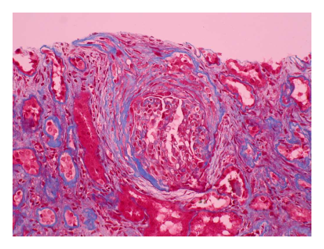
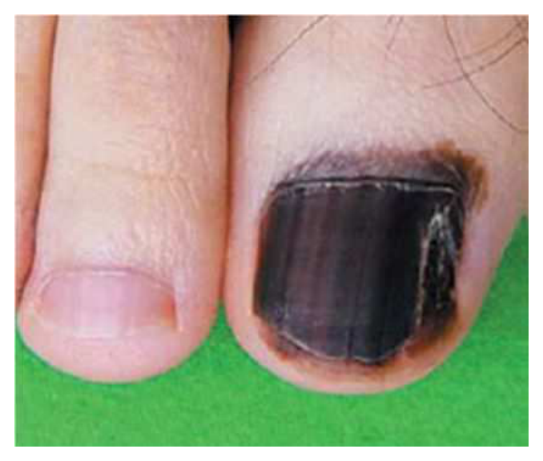
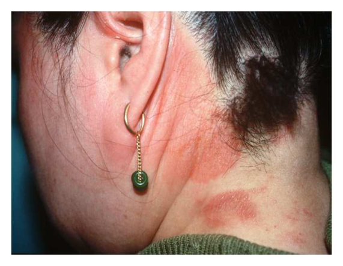
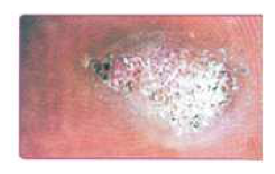
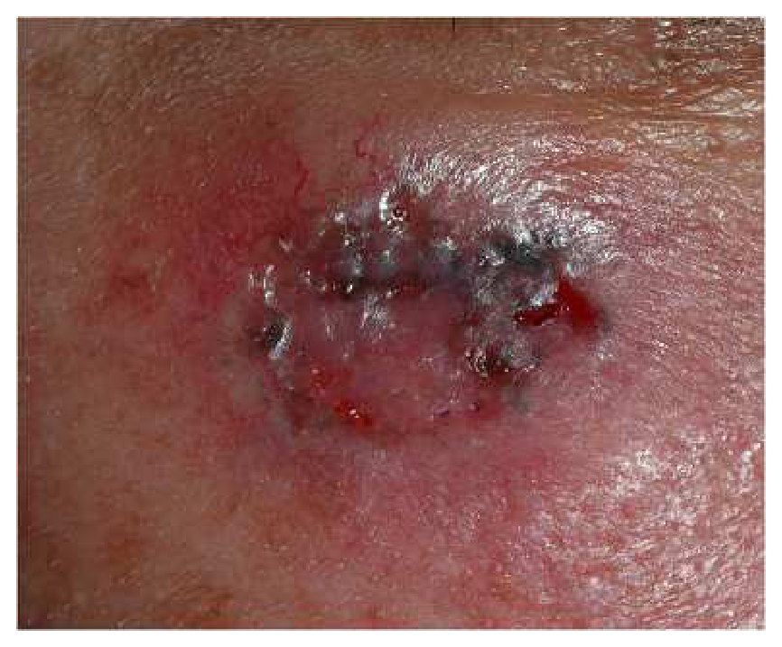
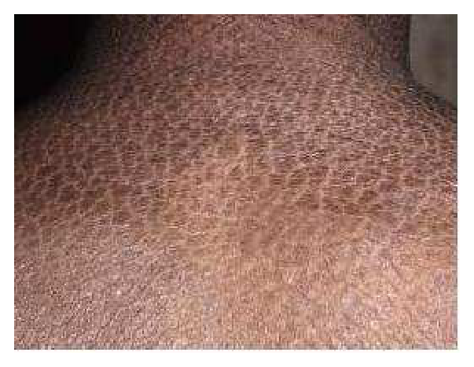
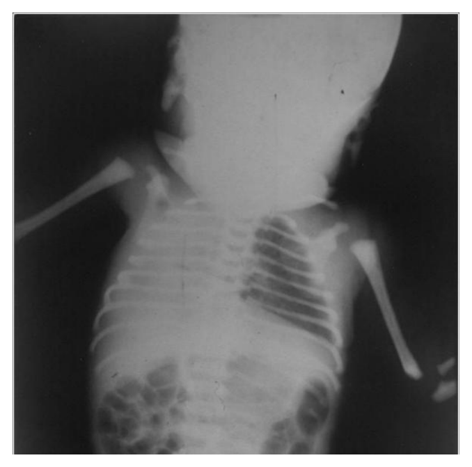

開卷有益 ／
醫師 ／ 醫學（四）（包括小兒科、皮膚科、神經科、精神科等科目及其相關臨床實例與醫學倫理） ／ 107 年第 1 次107 年第 1 次醫師醫學（四）（包括小兒科、皮膚科、神經科、精神科等科目及其相關臨床實例與醫學倫理）試題與答案
這一頁是民國 107 年第 1 次醫師醫學（四）（包括小兒科、皮膚科、神經科、精神科等科目及其相關臨床實例與醫學倫理）的整份歷屆試題，共 80 題，題目與標準答案出自考選部「國家考試試題及測驗式試題答案」開放資料，其中 80 題附有詳解。以下逐題列出題幹、選項與答案；要計時作答或記錄成績，請用線上練習。
考選部原始場次代碼：107020
線上作答這一科 →
全部 80 題
第 1 題
足月兒出生時，母親有發燒症狀且羊膜已在出生前兩天破裂，嬰兒於出生後8小時開始明顯的呼吸窘迫，血壓下降，胸部X光呈現雙側全面的浸潤，並有少許肋膜腔積水，最可能的診斷為下列何者？
（A） 大腸桿菌（Escherichia coli）感染（B） 綠膿桿菌（Pseudomonas spp.）感染（C） 肺炎鏈球菌（Streptococcus pneumoniae）感染（D） B群鏈球菌（group B Streptococcus）感染答案：（D）
詳解與考點 正解：母體發燒、長時間破水與出生後 8 小時即出現呼吸窘迫、休克及瀰漫肺浸潤，這是早發型新生兒敗血症合併肺炎的典型情境。B 群鏈球菌是重要致病菌，故選 D。
A：大腸桿菌也可造成早發型新生兒敗血症，特別在早產或特定高危情境常見；但本題的典型考法最符合 B 群鏈球菌。
B：綠膿桿菌較常與院內感染或醫療照護暴露相關，並非本題產道垂直感染情境的首選。
C：肺炎鏈球菌不是典型早發型新生兒敗血症的主要致病菌，與母體長時間破水的線索不相符。
本題考點：早發型新生兒敗血症（early-onset neonatal sepsis）——母體發燒與長時間破水是重要線索；B 群鏈球菌（group B Streptococcus）可致肺炎、呼吸窘迫與休克；須與院內感染病原區分。
第 2 題
幼稚園中班的小恩，前年和去年皆施打過流行性感冒疫苗，半個月前被診斷得了流行性感冒，而服用了克流感（oseltamivir）治療。有關小恩後續的流感防範措施，下列何者是最佳的選擇？
（A） 今年施打一劑流感疫苗（B） 年齡未達8歲且打過疫苗又得病，今年應施打兩劑流感疫苗（C） 已服用過克流感，今年不必施打流感疫苗（D） 流感疫苗無效，明年不要施打答案：（A）
詳解與考點 正解：小恩過去已在兩個流感季接種過疫苗，因此今年接種劑數依既往接種史判定，不因近期罹患流感或使用 oseltamivir 而改變。最適當為今年施打一劑流感疫苗，故選 A。
B：兒童是否需要兩劑取決於先前流感疫苗接種史，而非只看年齡未滿 8 歲；小恩已有兩個流感季接種史，故不需因這次感染而改為兩劑。
C：oseltamivir 是治療或預防流感的抗病毒藥，不能取代當季疫苗提供的預防效益。
D：感染或接種後仍可能因病毒株差異而罹病，這不表示流感疫苗無效；接種仍可降低感染後嚴重度與併發症風險。
本題考點：流感疫苗（influenza vaccine）——兒童接種劑數依既往疫苗史判定；流感感染與 oseltamivir 治療不取代疫苗；疫苗效益包括降低重症與併發症。
第 3 題
7歲男童發燒、咳嗽3天，肺部聽診兩側有細囉音（fine crackles），經使用cefotaxime 150 mg/kg/day q6h治療3天之後，發燒持續存在，但該男童活力良好，無呼吸窘迫，胸部X光片呈對稱性間質性浸潤。下列那一項處置最適當？
（A） 改用cefotaxime 300 mg/kg/day q6h（B） 改用azithromycin 10 mg/kg/day qd（C） 改用vancomycin 40 mg/kg/day q8h（D） 改用penicillin 300,000 units/kg/day q6h答案：（B）
詳解與考點 正解：學齡兒、雙側細囉音、對稱性間質性浸潤，以及使用 cefotaxime 後仍發燒但全身狀況良好，指向非典型肺炎。azithromycin 可涵蓋 Mycoplasma pneumoniae 等非典型病原，故選 B。
A：提高 cefotaxime 劑量仍主要加強典型細菌涵蓋，無法解決最可能的非典型病原，故不適當。
C：vancomycin 用於考慮耐藥革蘭氏陽性菌等特定情境；本題沒有毒性表現、膿胸或局部實變等支持線索。
D：penicillin 的涵蓋範圍較偏向特定典型細菌，也不能有效處理非典型肺炎；細囉音加間質性浸潤看似肺炎都能用抗菌藥，關鍵仍在病原分類。
本題考點：非典型肺炎（atypical pneumonia）——學齡兒合併間質性浸潤應考慮 Mycoplasma pneumoniae；巨環類抗生素（macrolide antibiotics）如 azithromycin 可用於非典型病原；抗生素選擇須依病原推定而非單純加量。
第 4 題
母親懷疑2歲女兒誤食異物而將她帶至急診室，母親主訴女童過去一直很好，剛才與哥哥在遊戲室玩耍，哥哥發現女童疑似吞下某物體，並開始咳嗽及哭泣，檢查時發現女童無發紺，呼吸略快，呼吸音正常，下列何項為最適當的處置？
（A） 衛教後返家觀察（B） 頸部及胸部X光檢查（C） 上消化道鋇劑檢查（D） 電腦斷層攝影檢查答案：（B）
詳解與考點 正解：2 歲幼兒有目擊疑似吞入異物，隨即咳嗽與哭泣，雖然目前沒有發紺且呼吸音正常，仍需先確認異物位置與是否為可見的放射不透光異物。頸部及胸部 X 光是最適當的初步檢查，故選 B。
A：正常呼吸音不能排除食道異物或非完全性氣道阻塞；已有明確目擊病史時，不應只衛教返家。
C：鋇劑可能妨礙後續內視鏡處置，也有吸入風險，並非急診初步檢查首選。
D：電腦斷層有較高輻射暴露，通常保留給初步檢查無法釐清且臨床仍高度懷疑的情況，不能取代先做 X 光。
本題考點：兒童異物吞入（foreign body ingestion）——目擊吞入加突然咳嗽即使生命徵象暫穩定仍須評估；頸胸 X 光（neck and chest radiography）用於定位；鋇劑檢查與電腦斷層不是例行第一步。
第 5 題
足月產的新生兒，出生體重3500公克，出生後第5天體重4200公克，腎臟超音波顯示有雙側水腎（hydronephrosis）及輸尿管擴大（hydroureter），膀胱壁厚而不規則，下列何者為最可能的診斷？
（A） 膀胱輸尿管逆流（bilateral vesicoureteral reflux）（B） 後尿道瓣（posterior urethral valves）（C） 輸尿管膀胱接合處阻塞（ureterovesical junction stenosis）（D） 輸尿管腎盂接合處阻塞（ureteropelvic junction stenosis）答案：（B）
詳解與考點 正解：新生兒雙側水腎、雙側輸尿管擴大，以及膀胱壁厚且不規則，代表膀胱出口阻塞造成整個下泌尿道回壓。後尿道瓣最能同時解釋這組表現，故選 B。
A：雙側膀胱輸尿管逆流可造成上泌尿道擴張，但無法像後尿道瓣一樣典型地解釋膀胱出口阻塞與厚、不規則膀胱壁。
C：輸尿管膀胱接合處阻塞主要影響阻塞側輸尿管與腎盂，通常不會造成典型的膀胱壁改變。
D：輸尿管腎盂接合處阻塞造成腎盂水腎，輸尿管多不擴大，且與本題雙側輸尿管擴大不符。
本題考點：後尿道瓣（posterior urethral valves）——男性新生兒的下泌尿道阻塞可導致雙側水腎（hydronephrosis）、輸尿管擴大（hydroureter）與膀胱壁肥厚；阻塞位置可由輸尿管是否擴大協助判讀。
第 6 題
15歲男孩，因急性腎衰竭而需進行緊急之透析治療。尿液檢查發現男童有血尿及嚴重之蛋白尿（二十四小時尿蛋白值為7.6 g/24 hr）。血中的血清白蛋白值為3.2 g/dL，血中補體C3、C4均正常。腎切片發現Bowman'scapsule內有細胞性的半月型增生（epithelial cell crescent formation），如圖所示，螢光染色可見免疫複合體沈積。下列何者診斷最恰當？

（A） 鏈球菌感染後之急性腎炎（poststreptococcal glomerulonephritis）合併急性腎衰竭（B） IgA腎炎（IgA nephropathy）合併急性腎衰竭（C） WHO分類之第四類狼瘡性腎炎（WHO class IV lupus nephritis）合併急性腎衰竭（D） ANCA-mediated腎絲球腎炎（ANCA-mediated glomerulonephritis）合併急性腎衰竭答案：（B）
詳解與考點 正解：腎切片圖可見 Bowman's capsule 內明顯的細胞性半月體，代表快速進行性腎絲球腎炎（rapidly progressive glomerulonephritis）的嚴重腎小球傷害。病人有血尿、腎功能急遽惡化、腎病症候群範圍蛋白尿，且 C3、C4 正常；螢光染色又見免疫複合體沈積，最符合 IgA 腎炎造成的免疫複合體型半月體腎炎，故選 B。
A：鏈球菌感染後腎炎也可見免疫複合體沉積及半月體，但典型實驗室特徵是 C3 降低，通常在感染後出現腎炎症候群；本題 C3、C4 均正常，較不支持（A）。
C：第四類狼瘡性腎炎可造成瀰漫性增生性腎炎、免疫複合體沉積、嚴重蛋白尿與半月體，外觀上是重要誘答；但活動性狼瘡腎炎常伴補體消耗，且本題為15歲男性、C3與C4均正常，整體較不符合（C）。
D：ANCA-mediated 腎絲球腎炎是少免疫沉積型（pauci-immune）半月體腎炎，螢光染色通常缺乏或僅有極少免疫複合體沉積；本題明示可見免疫複合體沉積，故不符（D）。
本題考點：半月體腎炎（crescentic glomerulonephritis）提示快速進行性腎絲球腎炎；IgA 腎炎（IgA nephropathy）為免疫複合體型腎炎，補體多正常；ANCA-associated glomerulonephritis 則屬少免疫沉積型，須以免疫螢光鑑別。
第 7 題
懷孕週數28週的早產兒，出生後五個月時至門診健康檢查。下列何種評估及建議最為正確？
（A） 評估發展應該以兩個月年齡計算（B） 如果還不會抓握東西，表示細動作發展遲緩（C） 建議父母應該添加副食品（D） 建議開始使用學步車以促進粗動作發展答案：（A）
詳解與考點 正解：28 週出生、現在實足年齡 5 個月的早產兒。校正年齡＝實足年齡 5 個月－早產 3 個月＝2 個月，因此發展評估應以 2 個月校正年齡為準，故選 A。
B：以校正年齡 2 個月判讀時，尚未抓握物品不必然表示細動作遲緩；若直接用實足年齡判讀會高估發展落後。
C：副食品添加須綜合校正年齡、發展準備度、營養與餵食能力決定，不能僅由實足 5 個月就直接下結論。
D：學步車不能取代安全的地板活動，且有受傷風險，不是促進粗大動作發展的建議。
本題考點：早產兒校正年齡（corrected age）——校正年齡＝實足年齡－早產週數換算的時間；發展評估（developmental assessment）應以校正年齡判讀；餵食與動作介入須依發展準備度及安全性個別建議。
第 8 題
注意力不集中過動症（attention-deficit/hyperactivity disorder；ADHD）典型的診斷條件，不包括下列何者？
（A） 注意力不足（inattention）（B） 過動（hyperactivity）（C） 衝動（impulsivity）（D） 智能不足（mental retardation）答案：（D）
詳解與考點 正解：ADHD 的核心症狀群。診斷重點是注意力不足、過動與衝動，智能不足不是 ADHD 的典型診斷條件，故選 D。
A：注意力不足是 ADHD 的核心症狀之一，可表現為容易分心、難以持續完成作業或常遺失物品，故非答案。
B：過動是 ADHD 的核心症狀之一，如坐不住、過度跑跳或活動量不合情境，敘述正確。
C：衝動與過動常同屬一個症狀向度，例如搶答、難等待或打斷他人，故屬典型診斷特徵。
本題考點：注意力缺損／過動症（attention-deficit/hyperactivity disorder, ADHD）——核心症狀為注意力不足（inattention）、過動（hyperactivity）與衝動（impulsivity）；智能不足（intellectual disability）可與 ADHD 共存但不是診斷必要條件。
第 9 題
12歲女童，因為身材矮小而就診，父親身高165公分，母親身高154公分。最近一年長3公分。身體診查顯示身高130公分（低於第3百分位），體重30公斤（第10百分位），無第二性徵發育，其他器官亦未發現異常。當時骨齡檢查為9歲，若要確切診斷，下列那一項刺激試驗，對診斷最無參考價值？
（A） 運動（exercise）（B） 胰島素（insulin）（C） 精氨酸（arginine）（D） 升糖素（glucagon）答案：（A）
詳解與考點 正解：矮小、年生長速率偏低與骨齡延遲，須以生長激素刺激試驗協助評估。胰島素、精氨酸與升糖素皆可作為藥理性生長激素刺激；運動的刺激效果較不穩定，對確切診斷最無參考價值，故選 A。
B：胰島素誘發低血糖可刺激生長激素分泌，是常用的刺激方式之一，故有診斷參考價值。
C：精氨酸可抑制生長抑素作用，促使生長激素分泌，為常用刺激試驗。
D：升糖素刺激試驗亦可用於評估生長激素分泌；它看似與生長激素無直接關係，但可透過代謝變化誘發分泌，故仍具參考價值。
本題考點：生長激素缺乏（growth hormone deficiency）——矮小評估須合併生長速率與骨齡（bone age）；生長激素刺激試驗（growth hormone stimulation test）多採標準化藥理刺激；運動刺激的再現性較差。
第 10 題
兒童時期發生的系統性紅斑性狼瘡（systemic lupus erythematosus, SLE），預後比成人時期才發作的系統性紅斑性狼瘡的預後差，主要是兒童的那個器官系統較易受影響？
（A） 心臟（B） 中樞神經系統（C） 腎臟（D） 血液答案：（C）
詳解與考點 正解：兒童期發病的 SLE 為何預後較差。兒童 SLE 較常有嚴重腎臟侵犯，狼瘡腎炎可造成持續腎功能損害，是影響預後的重要原因，故選 C。
A：心臟可受 SLE 影響，例如心包膜炎，但不是兒童 SLE 預後較差的主要器官差異。
B：中樞神經系統侵犯雖可能嚴重，卻不是本題所問兒童相較成人最主要、最典型的預後不良來源。
D：血液學異常在 SLE 可見，但多可隨疾病控制改善，通常不若嚴重腎臟侵犯直接決定長期器官預後。
本題考點：兒童系統性紅斑性狼瘡（childhood-onset systemic lupus erythematosus）——腎臟侵犯（renal involvement）與狼瘡腎炎（lupus nephritis）是重要器官損害；兒童病程常較具侵襲性，須追蹤腎功能與尿液異常。
第 11 題
關於缺鐵性貧血（iron-deficiency anemia, IDA）的敘述，下列何者錯誤？
（A） 低體重早產兒為好發族群（B） 青春期後的女性罹患慢性缺鐵性貧血應考慮月經過多（C） 患者血清中（serum）ferritin 是下降的（D） 足月兒的缺鐵性貧血常發生在出生後前3個月答案：（D）
詳解與考點 正解：足月兒的鐵儲存量足以支應出生後一段時間，缺鐵性貧血並不常在前 3 個月即發生；D 的時間點過早，故為錯誤敘述。
A：低出生體重與早產兒的鐵儲備較少、生長需求較高，為缺鐵性貧血好發族群，敘述正確。
B：青春期後女性若有慢性缺鐵性貧血，月經過多是重要的慢性失血原因，應納入病因評估。
C：ferritin 反映體內鐵儲存，在單純缺鐵時通常下降；它看似可受發炎影響而升高，但不改變本題典型缺鐵的判讀。
本題考點：缺鐵性貧血（iron-deficiency anemia, IDA）——早產與低出生體重增加風險；血清鐵蛋白（serum ferritin）下降支持鐵儲存不足；病因評估要考慮生長需求與慢性失血。
第 12 題
1個月大的新生兒，睡眠時正常心跳的範圍為：
（A） 100～140次/分（B） 160～180次/分（C） 80～100次/分（D） 180～220次/分答案：（A）
詳解與考點 正解：1 個月新生兒在睡眠狀態的生理性心率較清醒或哭鬧時低；在題目所列範圍中，100～140 次/分最符合，故選 A。不同參考表會因清醒、睡眠、量測方式與年齡切點而略有不同，本題僅能依所給選項的典型範圍判讀。
B：160～180 次/分對睡眠中的 1 個月嬰兒偏快，應考慮哭鬧、發燒、疼痛或心律問題等情境，故非典型正常範圍。
C：80～100 次/分偏慢；雖然睡眠可使心率下降，但此範圍不是本題所問新生兒的典型答案。
D：180～220 次/分明顯偏快，較接近心搏過速的範圍，不適合作為睡眠時正常心率。
本題考點：新生兒生命徵象（neonatal vital signs）——心率（heart rate）受睡眠、清醒與哭鬧影響；判讀須結合年齡與臨床狀態；本題數值範圍受不同參考表定義影響
第 13 題
某些特定先天性代謝異常疾病治療原則是飲食控制，以特殊配方奶粉而言，下列何種疾病是最無效的？
（A） 半乳糖血症（galactosemia）（B） 典型苯酮尿症（phenylketonuria）（C） 典型高胱胺酸尿症（homocystinuria）（D） 葡萄糖-6-磷酸去氫酶（glucose-6-phosphate dehydrogenase）缺乏症答案：（D）
詳解與考點 正解：「特殊配方奶粉」是否能透過限制特定代謝底物而改善疾病。半乳糖血症、苯酮尿症與典型高胱胺酸尿症都可藉飲食限制相關胺基酸或醣類處理；G6PD 缺乏症是紅血球抗氧化防禦缺陷，特殊配方奶粉無法矯正其酵素缺乏，故選 D。
A：半乳糖血症可避免乳糖與半乳糖來源，以減少有毒代謝物累積，特殊配方有治療意義。
B：典型苯酮尿症可用低苯丙胺酸飲食與特殊配方控制血中苯丙胺酸，屬典型飲食治療疾病。
C：典型高胱胺酸尿症可依病型採限制蛋胺酸等飲食策略與營養補充，特殊配方可作為治療的一環。
本題考點：先天代謝異常（inborn errors of metabolism）——底物限制（substrate restriction）適用於特定代謝物累積疾病；半乳糖血症（galactosemia）與苯酮尿症（phenylketonuria）可用特殊配方；G6PD 缺乏症（glucose-6-phosphate dehydrogenase deficiency）重點是避免氧化壓力而非配方奶治療。
第 14 題
沙門氏菌（salmonella）會引起兒童的細菌性腸胃炎，關於沙門氏菌的敘述，下列何者錯誤？
（A） 免疫不全的病童比一般兒童更容易發生菌血症（B） 當腸胃炎孩童只有糞便培養出沙門氏菌，但血液培養未長菌，標準治療是及早給與抗生素（C） 幼童應避免接觸爬蟲類、兩棲類的動物，以免被沙門氏菌感染（D） 沙門氏菌腸炎的併發症包含反應性關節炎（reactive arthritis）答案：（B）
詳解與考點 正解：僅糞便培養出沙門氏菌、血液培養未長菌的腸炎。多數無併發症的非傷寒沙門氏菌腸炎以補液等支持療法為主；例行及早使用抗生素不能縮短病程，反可能延長帶菌期，故選 B。
A：免疫不全的兒童較可能由腸道感染進展為侵襲性疾病或菌血症，敘述正確。
C：爬蟲類與兩棲類可帶有沙門氏菌；幼童接觸後容易經手口途徑感染，避免接觸是合理的預防衛教。
D：沙門氏菌感染後可出現反應性關節炎（reactive arthritis），是感染後免疫反應造成的腸外併發症。
本題考點：非傷寒沙門氏菌腸炎（nontyphoidal salmonellosis）多以支持療法處置；幼小、免疫不全或侵襲性感染高風險者須考慮抗生素；反應性關節炎（reactive arthritis）是重要感染後併發症。
第 15 題
新生兒出生時身高體重及頭圍正常，7天大時發燒，鞏膜呈現黃色，肝脾腫大，聽力檢查異常，最有可能是下列何種感染？
（A） 單純性疱疹（herpes simplex virus ）（B） 先天性梅毒（congenital syphilis）（C） Ｂ型肝炎（hepatitis B virus ）（D） 先天性巨細胞病毒（congenital cytomegalovirus）答案：（D）
詳解與考點 正解：新生兒出現黃疸、肝脾腫大與聽力異常，關鍵是先天性感染合併感音性聽力損失；這組線索最符合先天性巨細胞病毒感染（congenital cytomegalovirus），故選 D。
A：單純性疱疹病毒（herpes simplex virus）新生兒感染可造成皮膚、眼口病灶、腦炎或瀰漫性肝炎，但感音性聽力異常並非本題最具辨識力的典型組合。
B：先天性梅毒（congenital syphilis）可有肝脾腫大與黃疸，因而看似相近；但合併新生兒聽力異常時，應優先想到先天性巨細胞病毒感染。
C：B型肝炎病毒（hepatitis B virus）母嬰感染多呈慢性帶原風險，通常不以出生後早期的肝脾腫大及感音性聽力異常表現，故不符。
本題考點：先天性巨細胞病毒感染（congenital cytomegalovirus infection）可造成黃疸、肝脾腫大及感音神經性聽力損失；先天性感染（congenital infection）的鑑別須以器官受累型態判讀。
第 16 題
6週大男嬰，從1週前吐奶的情況，突然越吐越厲害，最近幾乎每一餐喝完奶半小時內很快就吐光，吐出的內容物為沒有黃綠色，體重也沒有增加反而減少，住院後若抽血檢驗動脈血氣體分析（arterial blood gasanalysis） ，最有可能會呈現下列那種結果？
（A） 代謝性鹼中毒（metabolic alkalosis）（B） 代謝性酸中毒（metabolic acidosis）（C） 呼吸性鹼中毒（respiratory alkalosis）（D） 呼吸性酸中毒（respiratory acidosis）答案：（A）
詳解與考點 正解：6週大嬰兒反覆、進行性的非膽汁性噴射狀嘔吐與體重減輕，最符合肥厚性幽門狹窄（hypertrophic pyloric stenosis）。持續嘔吐會流失胃酸中的氫離子與氯離子，使血中碳酸氫根相對升高，形成代謝性鹼中毒（metabolic alkalosis），故選 A。
B：代謝性酸中毒常見於嚴重腹瀉流失碳酸氫根、休克或酮酸堆積；本題主要是嘔吐胃液，酸鹼方向相反。
C：呼吸性鹼中毒是過度換氣使二氧化碳降低所致，無法由非膽汁性嘔吐直接解釋，故不符。
D：呼吸性酸中毒是肺泡低通氣導致二氧化碳滯留；本題沒有呼吸抑制或換氣不足的線索，故不符。
本題考點：肥厚性幽門狹窄（hypertrophic pyloric stenosis）典型為幼嬰進行性非膽汁性嘔吐；胃酸流失造成低氯性代謝性鹼中毒（hypochloremic metabolic alkalosis）。
第 17 題
關於C型肝炎（hepatitis C），下列何者錯誤？
（A） 和B型肝炎相比，C型肝炎垂直感染（perinatal transmission）的比率較低（B） 若母親為C型肝炎帶原者且合併有高病毒血症或合併有愛滋病毒感染時，則垂直感染的風險會增加（C） C型肝炎急性感染20～30年後，部分患者會進展至肝硬化（cirrhosis）、肝衰竭（liver failure）甚至肝癌（hepatocellular carcinoma）（D） 目前可以接種疫苗預防答案：（D）
詳解與考點 正解：題目問錯誤敘述。C型肝炎病毒（hepatitis C virus, HCV）尚無可用於預防感染的疫苗，因此「目前可以接種疫苗預防」錯誤，選 D。
A：相較於B型肝炎，HCV 的周產期垂直感染率較低，敘述正確，故非答案。
B：孕婦病毒量較高或合併人類免疫缺乏病毒感染時，HCV 垂直傳播的風險會上升，故敘述正確。
C：慢性 HCV 感染可在多年後進展至肝硬化、肝衰竭或肝細胞癌（hepatocellular carcinoma），敘述正確。
本題考點：C型肝炎病毒（hepatitis C virus, HCV）可造成慢性肝病與肝細胞癌；周產期傳播（perinatal transmission）受母體病毒量及合併感染影響；目前沒有 HCV 疫苗。
第 18 題
為正確診斷非酒精性脂肪肝疾病（nonalcoholic fatty liver disease），下列何項敘述，不是需做肝臟超音波檢查此病的危險因子？
（A） 胰島素抗性（insulin resistance）（B） 3歲以上肥胖男童（C） B型肝炎帶原者（hepatitis B carrier）（D） 三酸苷油酯（triglyceride）過高答案：（C）
詳解與考點 正解：胰島素抗性、肥胖與三酸甘油酯過高都屬非酒精性脂肪肝疾病（nonalcoholic fatty liver disease, NAFLD）的代謝危險因子；B 型肝炎帶原是另一種肝病病因，並非 NAFLD 的代謝危險因子，故選 C。
A：胰島素抗性（insulin resistance）與脂肪組織代謝失衡密切相關，是 NAFLD 的核心危險因子。
B：肥胖兒童有較高的肝臟脂肪堆積風險；但肥胖不等於 3 歲以上即應常規做肝臟超音波。現行篩檢通常以 ALT 為主，較早篩檢須有嚴重肥胖等額外高風險因素。
D：三酸甘油酯（triglyceride）升高反映代謝症候群相關的脂質異常，與 NAFLD 常共存。
本題考點：非酒精性脂肪肝疾病（nonalcoholic fatty liver disease, NAFLD）與肥胖、胰島素抗性及脂質異常相關；兒童篩檢（screening）通常以 ALT 為主；病毒性肝炎（viral hepatitis）是另一類肝病病因。
第 19 題
一位兒童因腹瀉求診，他排的糞便為稀水便，糞便檢驗並無白血球（leukocytes），臨床上呈現因禁食而改善症狀，下列那一種檢查結果最為吻合？
（A） 糞便檢查中無還原物質（reducing substances）（B） 吐氣中氫氣濃度降低（decreased breath hydrogen）（C） 困難梭狀桿菌（Clostridium difficile）毒素檢測為陽性（D） 糞便離子間距 （ion gap） 大於 200 mOsm/kg答案：（D）
詳解與考點 正解：水樣便、糞便無白血球且禁食改善，指向滲透性腹瀉（osmotic diarrhea）：未吸收溶質留在腸腔內拉水，停止攝食後症狀會改善。糞便離子間距（stool osmotic gap）可用 290 − 2 ×（糞便鈉＋糞便鉀）估算；滲透性腹瀉的間距偏高，因此大於 200 mOsm/kg 最吻合，故選 D。
A：醣類吸收不良造成的滲透性腹瀉常見糞便還原物質（reducing substances）陽性，而非無還原物質，故不符。
B：未吸收醣類在結腸被發酵會增加呼氣氫氣（breath hydrogen）；其濃度降低與此機轉相反。
C：困難梭狀桿菌（Clostridium difficile）毒素陽性支持感染性腸炎，常與抗生素暴露及發炎性腹瀉脈絡相關，不能解釋禁食即改善的滲透性型態。
本題考點：滲透性腹瀉（osmotic diarrhea）禁食後改善；糞便離子間距（stool osmotic gap）偏高支持腸腔未吸收溶質增加；呼氣氫氣試驗（breath hydrogen test）可協助偵測醣類吸收不良。
第 20 題
關於梅克爾憩室（Meckel diverticulum），下列敘述何者錯誤？
（A） 最常見的臨床表現為無痛性出血，其次為腸阻塞（B） 通常位於離迴盲瓣（ileocecal valve）50～75公分內的迴腸端（C） 可能含有異位性組織（ectopic tissue），胃組織比胰組織常見（D） 年紀小的幼童比年紀大的孩童，更易發生憩室炎（diverticulitis）答案：（D）
詳解與考點 正解：題目問錯誤敘述。梅克爾憩室（Meckel diverticulum）的症狀表現隨年齡而異；憩室炎較常在較大的兒童或成人表現，並非年紀小的幼童較易發生，因此選 D。
A：有症狀的梅克爾憩室常以無痛性下消化道出血表現，腸阻塞也是重要表現，故敘述正確。
B：梅克爾憩室位於遠端迴腸、接近迴盲瓣，是胚胎卵黃腸管殘留所致，故位置敘述符合其典型解剖特徵。
C：憩室可含異位性組織（ectopic tissue），其中胃黏膜較胰臟組織常見；胃酸分泌亦可導致鄰近迴腸潰瘍與出血，故正確。
本題考點：梅克爾憩室（Meckel diverticulum）是卵黃腸管殘留；異位胃黏膜（ectopic gastric mucosa）可引發無痛性腸道出血；併發症包括出血、腸阻塞與憩室炎（diverticulitis）。
第 21 題
下列何種疾病引起的低血鈉（hyponatremia）與血液稀釋無關？
（A） 肝硬化（liver cirrhosis）（B） 鬱血性心臟衰竭（congestive heart failure）（C） 抗利尿激素不適當分泌症候群（syndrome of inappropriate antidiuretic hormone secretion）（D） 腎病症候群（nephrotic syndrome）本題送分，無標準答案
詳解與考點 本題經考選部公告一律給分。作答任一選項皆得分。原因是題幹要找與血液稀釋無關的低血鈉，但四個選項都可造成水分相對滯留，使血鈉因稀釋而下降，沒有一個符合題問條件，屬於甲型爭議，故送分。
A：肝硬化使有效動脈血容量下降，繼發抗利尿激素分泌與水分滯留，常形成高容量但有效循環不足的稀釋性低血鈉。
B：鬱血性心臟衰竭同樣因有效動脈血容量不足而活化保水機制，總體水分增加常超過鈉增加，屬稀釋性低血鈉。
C：抗利尿激素不適當分泌症候群的核心就是抗利尿激素使自由水滯留，雖外觀常為等容積，血鈉下降仍是稀釋所致。
D：腎病症候群的低白蛋白血症與水腫可降低有效循環血量，進而保水並造成稀釋性低血鈉。
本題考點：低血鈉（hyponatremia）要先分辨水分滯留與鈉流失；有效動脈血容量（effective arterial blood volume）降低可在水腫狀態下仍驅動抗利尿激素。
第 22 題
關於兒童急性鏈球菌感染後腎臟發炎（acute poststreptococcal glomerulonephritis）的治療，下列敘述何者正確？
（A） 由於為鏈球菌感染所引起的，因此給與適當的抗生素治療可以縮短病程（B） 高血壓的治療包括給與鈣離子抑制劑（calcium channel antagonists）或利尿劑（diuretics）（C） 限制鈉離子的攝取，主要是針對慢性腎臟病的預防（D） 類固醇為首選的治療藥物答案：（B）
詳解與考點 正解：急性鏈球菌感染後腎絲球腎炎（acute poststreptococcal glomerulonephritis, APSGN）主要採支持性治療，若有水腫與高血壓，重點是限鹽、控制體液與降血壓；利尿劑可處理容量負荷，鈣離子通道阻斷劑（calcium channel antagonists）可用於血壓控制，故選 B。
A：抗生素可清除殘存鏈球菌、降低傳播，但腎炎是感染後的免疫反應，抗生素不能縮短既已發生的腎炎病程，故錯。
C：限制鈉離子是為處理急性期水腫與高血壓，不只是慢性腎臟病的預防措施，故敘述錯誤。
D：類固醇不是典型 APSGN 的首選治療；本病多可自行恢復，應先做支持性處置，故不符。
本題考點：急性鏈球菌感染後腎絲球腎炎（acute poststreptococcal glomerulonephritis, APSGN）屬感染後免疫性腎炎；支持性治療（supportive care）著重限鹽、利尿與血壓控制；抗生素無法逆轉已啟動的腎炎。
第 23 題
7歲兒童，自一年前起陸續出現清喉嚨的聲音，睡覺時聲音消失，緊張時更明顯，關於此疾病的敘述，下列何者正確？
（A） 大多發生於女性（B） 需注意有無合併注意力不集中過動異常（attention-deficit/hyperactivity disorders）（C） 需照肺部X光片（D） 需做腦部影像檢查答案：（B）
詳解與考點 正解：反覆清喉嚨、睡眠時消失且緊張時加重，符合聲音抽動（vocal tic）。抽動症（tic disorder）常合併注意力不足過動症（attention-deficit/hyperactivity disorder, ADHD），因此臨床評估應主動詢問注意力、過動及衝動症狀，選 B。
A：抽動症在兒童期較常見於男性，故「大多發生於女性」不正確。
C：典型病史與理學檢查若符合抽動，通常不需常規照肺部X光；清喉嚨雖看似呼吸道症狀，但睡眠消失與緊張加重更支持抽動。
D：沒有局部神經學異常、意識改變或非典型表現時，不需常規腦部影像檢查，故不符。
本題考點：抽動症（tic disorder）可表現為動作或聲音抽動，常在緊張時加重並在睡眠消失；注意力不足過動症（attention-deficit/hyperactivity disorder, ADHD）是常見共病。
第 24 題
足月出生六個月大之男嬰，經身體診查發現四肢短小，頭圍正常，前囟門大，眼瞼水腫，皮膚乾燥且黃疸，頭髮粗糙，下列何者為最正確之診斷？
（A） 先天性甲狀腺低能症（congenital hypothyroidism）（B） 先天性甲狀腺亢進症（congenital hyperthyroidism）（C） 純母奶餵食且餵食量不足（D） 新生兒高黃疸（hyperbilirubinemia）之併發症答案：（A）
詳解與考點 正解：6個月男嬰有四肢短小、前囟門大、眼瞼水腫、皮膚乾燥、黃疸與頭髮粗糙，這組代謝減慢與黏液水腫樣外觀是先天性甲狀腺低下症（congenital hypothyroidism）的典型線索，故選 A。
B：先天性甲狀腺亢進症會呈現代謝亢進，如心跳快、易躁動與生長受影響，與本題水腫、乾燥粗糙皮膚的低代謝表現相反。
C：母乳攝取不足可造成體重增加不佳及脫水，但無法整體解釋前囟門大、四肢短小、皮膚乾燥及粗糙頭髮等內分泌表現。
D：新生兒高黃疸的神經毒性併發症以膽紅素腦病變為主，不能解釋本題長期出現的黏液水腫樣外觀，故不符。
本題考點：先天性甲狀腺低下症（congenital hypothyroidism）可有黃疸延長、前囟門大、皮膚乾燥、粗糙頭髮與生長遲緩；甲狀腺素（thyroid hormone）對嬰兒生長與神經發育至關重要。
第 25 題
有關牛奶蛋白過敏，下列敘述何者錯誤？
（A） 通常在一歲之後出現（B） 兒童隨著年齡的成長，症狀可能緩解（C） 屬於一種IgE抗體主導（IgE-mediated）的過敏反應（D） 對牛奶蛋白過敏的兒童，改用羊奶或羊奶嬰兒配方，並沒有預防過敏的效果答案：（A）
詳解與考點 正解：題目問錯誤敘述。牛奶蛋白過敏（cow's milk protein allergy）多在嬰兒期開始接觸牛奶蛋白後出現，並非通常一歲之後才發病，因此選 A。
B：不少兒童會隨免疫耐受逐步建立而症狀緩解，敘述正確。
C：牛奶蛋白過敏可為 IgE 抗體主導（IgE-mediated）的立即型過敏反應；另亦存在非 IgE 介導型態，但這不使本敘述成為錯誤選項。
D：羊奶蛋白與牛奶蛋白有交叉反應，改用羊奶或羊奶配方不能可靠預防過敏，敘述正確。
本題考點：牛奶蛋白過敏（cow's milk protein allergy）常於嬰兒期發病；IgE 介導過敏（IgE-mediated allergy）可引起立即反應；交叉反應（cross-reactivity）使羊奶不適合作為預防替代品。
第 26 題
關於異位性皮膚炎（atopic dermatitis）的敘述，下列何者錯誤？
（A） 嬰幼兒最常見之慢性復發性皮膚病（chronic relapsing disease），約一半的病人在一歲前發病（B） Filaggrin 基因的缺損可於所有異位性皮膚炎病童身上發現（C） 異位性皮膚炎是和第二型輔助型T細胞（T-helper type 2 cells）有關的發炎疾病，因此多數患者血中IgE會上升（D） 嚴重異位性皮膚炎可考慮使用口服類固醇，如長期使用，停藥時須逐漸減量，以避免反彈（reboundeffect）答案：（B）
詳解與考點 正解：Filaggrin 基因變異會增加異位性皮膚炎（atopic dermatitis）的風險，但不是所有患者都能發現此缺損；異位性皮膚炎是多因子疾病，故選 B。
A：異位性皮膚炎是嬰幼兒常見的慢性復發性皮膚病，許多患者在早期兒童期發病，敘述正確。
C：異位性皮膚炎常見第2型輔助型 T 細胞（T-helper type 2 cells）相關發炎與 IgE 上升，故敘述符合典型免疫表現。
D：全身性口服類固醇不應作為常規或長期治療；至多在極少數嚴重情況短期過渡使用，驟停可能有反彈（rebound effect）。此項與現行治療原則有時效爭議，但非本題命題所指的錯誤。
本題考點：異位性皮膚炎（atopic dermatitis）是皮膚屏障與免疫失衡的多因子疾病；Filaggrin（FLG）缺損增加風險但非人人都有；全身性類固醇（systemic corticosteroid）不宜長期使用。
第 27 題
過敏性鼻炎（allergic rhinitis）的敘述，下列何者錯誤？
（A） 盛行率最高的學童慢性過敏性疾病（B） 病人日後罹患氣喘的風險，是無過敏性鼻炎的人的三倍高（C） 常伴隨著過敏性結膜炎發生，且比較容易發生中耳炎及鼻竇炎（D） 嚴重之過敏性鼻炎病人常有鼻塞症狀而影響生活品質，治療需以抗組織胺（anti-histamine agent）和局部鼻用去充血劑（intranasal decongestant）合併治療2到4週，來改善生活品質答案：（D）
詳解與考點 正解：題目問錯誤敘述。嚴重過敏性鼻炎的控制治療重點是避免過敏原與使用鼻用類固醇等抗發炎治療；局部鼻用去充血劑（intranasal decongestant）只宜短期緩解鼻塞，連續使用2到4週會增加藥物性鼻炎與反彈性鼻塞風險，因此 D 錯誤。
A：過敏性鼻炎是學童常見的慢性過敏疾病，敘述正確，故非答案。
B：過敏性鼻炎與氣喘有共同的過敏性氣道發炎背景，患者日後發生氣喘的風險較高，故敘述正確。
C：過敏性鼻炎常合併過敏性結膜炎，鼻腔發炎與阻塞亦可能增加鼻竇及中耳相關問題，故正確。
本題考點：過敏性鼻炎（allergic rhinitis）常與氣喘及過敏性結膜炎共病；鼻用去充血劑（intranasal decongestant）限短期使用以避免藥物性鼻炎（rhinitis medicamentosa）；鼻用類固醇（intranasal corticosteroid）是控制鼻部發炎的重要治療。
第 28 題
關於兒童惡性肝腫瘤（malignant hepatic tumor）的敘述，下列何者最不恰當？
（A） 肝母細胞癌（hepatoblastoma）主要發生在3歲以下的小孩，而肝細胞癌（hepatocellular carcinoma）的發病年齡較大（B） Beckwith-Wiedemann syndrome的患者，較易發生肝母細胞癌（hepatoblastoma）（C） 由於B 型肝炎疫苗的施打，已讓國內肝母細胞癌 （hepatoblastoma）發生率顯著下降，但肝細胞癌（hepatocellular carcinoma）則比率維持不變（D） 肝細胞癌（hepatocellular carcinoma）容易轉移至肺部，影響預後答案：（C）
詳解與考點 正解：題目問最不恰當敘述。B型肝炎疫苗主要降低與慢性B型肝炎感染相關的肝細胞癌（hepatocellular carcinoma）風險，並非使肝母細胞癌（hepatoblastoma）發生率顯著下降；將兩種腫瘤的疫苗效應對調，故選 C。
A：肝母細胞癌多發生在幼兒，肝細胞癌的發病年齡相對較大，這是兒童肝腫瘤的重要年齡鑑別，故正確。
B：Beckwith-Wiedemann syndrome 與肝母細胞癌風險增加有關，故敘述正確。
D：肝細胞癌可發生肺部轉移，遠端轉移會影響預後，故敘述正確。
本題考點：肝母細胞癌（hepatoblastoma）多見於幼兒，與 Beckwith-Wiedemann syndrome 相關；肝細胞癌（hepatocellular carcinoma）與慢性B型肝炎等肝病背景相關；B型肝炎疫苗可預防相關肝細胞癌。
第 29 題
有關兒童淋巴癌的敘述，下列何者錯誤？
（A） 在臺灣10歲以下的孩童，非何傑金氏淋巴瘤（Non-Hodgkin lymphoma） 的發生率，比何傑金氏淋巴瘤（Hodgkin lymphoma） 高（B） 大部分非何傑金氏淋巴瘤患童為新發性的（de novo）疾病，少部分有免疫缺陷的孩童則是次發性的（secondary） 得到非何傑金氏淋巴瘤（C） 與成人大部分是緩慢進展的 （indolent）不同，兒童的非何傑金氏淋巴瘤，通常是高度惡性且具侵略性的（high grade and aggressive），所以預後甚差（D） 勃氏淋巴瘤（Burkitt lymphoma）患童，會出現腫瘤溶解症後群 （tumor lysis syndrome），需特別加以留意答案：（C）
詳解與考點 正解：題目問錯誤敘述。兒童非何傑金氏淋巴瘤（Non-Hodgkin lymphoma）雖常是高度惡性、進展快速的疾病，但對現代分型治療的反應通常良好，不能因此推論「預後甚差」，故 C 錯誤。
A：兒童期非何傑金氏淋巴瘤的發生情形可高於何傑金氏淋巴瘤，敘述符合兒童年齡層的流行病學特徵。
B：多數兒童非何傑金氏淋巴瘤為新發性（de novo），免疫缺陷狀態可增加次發性淋巴增生或淋巴瘤風險，故正確。
D：勃氏淋巴瘤（Burkitt lymphoma）腫瘤增殖速度快，治療開始時易發生腫瘤溶解症候群（tumor lysis syndrome），必須密切預防與監測，故正確。
本題考點：兒童非何傑金氏淋巴瘤（Non-Hodgkin lymphoma）常為高度惡性但多可治療；勃氏淋巴瘤（Burkitt lymphoma）高腫瘤負荷時須防範腫瘤溶解症候群（tumor lysis syndrome）；免疫缺陷（immunodeficiency）可增加次發性淋巴瘤風險。
第 30 題
雖然兒科病童少有心臟腫瘤（cardiac tumors） 的發生，但若出現時，常造成心律不整及心衰竭的症狀，下列何種心臟腫瘤最為常見？
（A） 纖維瘤（fibroma）（B） 橫紋肌瘤（rhabdomyoma）（C） 黏液瘤 （myxoma）（D） 淋巴瘤（lymphoma）答案：（B）
詳解與考點 正解：兒童最常見的原發性心臟腫瘤是橫紋肌瘤（rhabdomyoma）。它常位於心室肌層，可能造成流出道阻塞、心律不整或心衰竭，故選 B。
A：纖維瘤（fibroma）也是兒童可見的良性心臟腫瘤，且可引起心律不整，但發生率低於橫紋肌瘤。
C：黏液瘤（myxoma）較常見於成人，尤其常見於心房；它看似是常見心臟腫瘤，但不是兒科最常見者。
D：淋巴瘤（lymphoma）可侵犯心臟卻不是兒童最常見的原發性心臟腫瘤，故不符。
本題考點：兒童原發性心臟腫瘤（primary cardiac tumor）以橫紋肌瘤（rhabdomyoma）最常見；腫瘤位置可造成流出道阻塞、心律不整（arrhythmia）與心衰竭。
第 31 題
下列疾病，何者不是引起嬰幼兒發生鬱血性心衰竭（congestive heart failure）的原因？
（A） 左心到右心分流（left-to-right cardiac shunts）（B） 心室上心搏過速（supraventricular tachycardia）（C） 心肌炎（myocarditis）（D） 心內膜炎（endocarditis）本題送分，無標準答案
詳解與考點 本題經考選部公告一律給分。(A)左心到右心分流、(B)心室上心搏過速、(C)心肌炎皆為嬰幼兒鬱血性心衰竭之公認常見病因；(D)心內膜炎雖較少單獨列為嬰幼兒鬱血性心衰竭之典型原因，但瓣膜破壞仍可續發心衰竭，致「何者不是原因」在(D)與其餘選項間的排他性判定因教材列舉範圍不同而生爭議，故送分。作答以現行兒科心臟學教材鬱血性心衰竭病因分類為準。
第 32 題
有關小胖威利症候群（Prader-Willi Syndrome）的敘述，下列何者錯誤？
（A） 母源性（maternal）染色體15q11-q13缺失（B） 新生兒及嬰兒期會有嚴重低張力與餵食困難（C） 小手與小腳（small hands and feet）（D） 性腺機能不足（hypogonadism）答案：（A）
詳解與考點 正解：題目問錯誤敘述。小胖威利症候群（Prader-Willi syndrome）典型是父源性15q11-q13區域缺失或該區域父源性表現缺失；母源性缺失較與天使症候群相關，因此 A 錯誤。
B：新生兒及嬰兒期明顯肌張力低下與餵食困難，是小胖威利症候群的早期典型表現，故正確。
C：小手與小腳（small hands and feet）是本症候群常見的身體特徵，故非答案。
D：性腺功能不足（hypogonadism）為小胖威利症候群常見的內分泌表現，故正確。
本題考點：小胖威利症候群（Prader-Willi syndrome）涉及15q11-q13父源性基因表現缺失；早期肌張力低下與餵食困難（feeding difficulty）可於後期轉為食慾亢進；性腺功能不足（hypogonadism）是常見表現。
第 33 題
有關透納氏症（Turner syndrome）的敘述，下列何者錯誤？
（A） Ｘ染色體短臂上有SHOX基因，因此病患會有矮小症狀（short stature）（B） 可能有左心異常（left-heart abnormalities）（C） 因為是性染色體異常，所以有性腺發育不全（gonadal dysgenesis）（D） 智力皆不受影響，完全正常答案：（D）
詳解與考點 正解：題目問錯誤敘述。透納氏症（Turner syndrome）患者整體智力多在正常範圍，但可能有視覺空間、數學、執行功能或社交認知方面的特定困難；「皆不受影響，完全正常」過度絕對，故選 D。
A：SHOX 基因位於X染色體短臂，透納氏症的單體性或結構異常可使其劑量不足，與矮小（short stature）有關，故正確。
B：透納氏症可合併左心結構異常（left-heart abnormalities），因此心血管評估重要，故敘述正確。
C：性染色體異常可造成性腺發育不全（gonadal dysgenesis），是透納氏症的核心表現之一，故正確。
本題考點：透納氏症（Turner syndrome）常見矮小、性腺發育不全與左心結構異常；SHOX 基因（SHOX gene）不足與矮小相關；神經認知表現（neurocognitive profile）可有特定弱項，即使整體智力多正常。
第 34 題
關於扁平苔癬 （lichen planus）敘述，下列何者錯誤？
（A） 偏紫色的扁平丘疹或斑塊（B） 多無臨床症狀（C） 病灶常呈多角型（D） 可以外用類固醇治療答案：（B）
詳解與考點 正解：扁平苔癬的典型皮疹。其經典特徵為紫色、扁平、多角形、常有搔癢的丘疹或斑塊；因此「多無臨床症狀」不符合其常見表現。皮膚型病灶可造成明顯搔癢，故錯誤敘述為 B。
A：偏紫色是扁平苔癬的典型色澤，常以紫紅色扁平丘疹呈現，敘述正確，故不是本題答案。
C：病灶可見多角形外觀，是扁平苔癬常用的形態學辨識線索，敘述正確。
D：局部類固醇可抑制發炎並減輕搔癢，是局限性皮膚扁平苔癬的常用治療，敘述正確。
本題考點：扁平苔癬（lichen planus）的典型皮疹為紫色、扁平、多角形且常搔癢；治療可使用局部類固醇（topical corticosteroids）。
第 35 題
關於皮膚與軟組織感染skin and soft tissue infections（SSTIs）之敘述，下列何者錯誤？
（A） impetigo與necrotizing fascitis之致病菌可能是Staphylococcus aureus（B） methicillin-resistant S. aureus（MRSA）在SSTI的盛行率逐漸增加（C） MRSA在異位性皮膚炎患者形成菌落的機會高於正常人（D） MRSA引起的皮膚與軟組織感染，多發生在醫療機構工作人員或住院病患，很少發生於一般社區正常人答案：（D）
詳解與考點 正解：MRSA 皮膚與軟組織感染的流行病學。MRSA 不只見於住院或醫療照護相關族群，亦可在一般社區造成感染，即社區相關 MRSA（community-associated MRSA）。因此說很少發生於一般社區正常人是錯誤的，故選 D。
A：膿痂疹可由 Staphylococcus aureus 引起；壞死性筋膜炎雖常見鏈球菌，但 S. aureus 亦可能為致病菌，敘述中的「可能」正確。
B：MRSA 在皮膚與軟組織感染中的重要性上升，是臨床選擇經驗性抗菌治療時需考量的現象，敘述正確。
C：異位性皮膚炎的皮膚屏障受損，較易有 S. aureus 定殖；這一點看似只與發炎皮膚有關，卻正是感染風險提高的原因，敘述正確。
本題考點：皮膚與軟組織感染（skin and soft tissue infections, SSTIs）；耐甲氧西林金黃色葡萄球菌（methicillin-resistant Staphylococcus aureus, MRSA）可造成醫療照護相關與社區相關感染；異位性皮膚炎（atopic dermatitis）的細菌定殖。
第 36 題
40歲男性，在右大腳趾出現如圖所示之表徵，有一年之久，最適切之診斷為：

（A） subungual hematoma（B） subungual melanoma（C） subungual pigmented nevus（D） friction induced melanonychia答案：（B）
詳解與考點 正解：圖中右大腳趾甲呈不均勻的深褐至黑色色素沉著，色帶寬廣且邊界不規則，並延及近端與側方甲周皮膚；40歲成人新發且持續1年的單一大趾甲病灶，最符合甲下黑色素瘤（subungual melanoma），故選 B。
A：甲下血腫（subungual hematoma）通常有外傷或反覆壓迫病史，血液會隨指甲生長向遠端移動、逐漸消退；本圖為持續的非均勻色素性病灶並有甲周色素延伸，不像單純血腫。
C：甲下色素痣（subungual pigmented nevus）較常呈規則、均勻且穩定的縱向色帶；本圖色澤與邊緣不規則、範圍寬廣，較支持惡性病變而非良性色素痣。
D：摩擦誘發黑甲症（friction induced melanonychia）多與長期鞋類摩擦相關，常見較規則的色素改變；本例單一大趾甲的寬廣不規則黑色色素與甲周延伸，不能以摩擦性變化解釋。
本題考點：甲下黑色素瘤（subungual melanoma）常見於成人單一指甲，警訊包括寬廣或變寬的縱向色帶、顏色不均與邊界不規則；Hutchinson sign 指色素延伸至甲周皮膚，須提高對甲下黑色素瘤的警覺。
第 37 題
下列何者與癩皮病（pellagra）無關？
（A） 缺乏維生素B6（pyridoxine）（B） 缺乏維生素C（ascorbic acid）（C） 缺乏維生素B3（niacin）（D） 長期使用isoniazid的病人答案：（B）
詳解與考點 正解：癩皮病與菸鹼酸缺乏的關聯。癩皮病是維生素 B3（niacin）缺乏，或色胺酸代謝受干擾所致；維生素 C 缺乏造成的是壞血病，與本題疾病無直接關係，故選 B。
A：維生素 B6 是色胺酸轉換為 niacin 的輔因子之一，缺乏時可影響此代謝路徑，與癩皮病有關。
C：缺乏維生素 B3（niacin）即為癩皮病的核心營養缺乏，敘述正確。
D：isoniazid 可干擾維生素 B6 與色胺酸代謝，長期使用者可能出現與 niacin 缺乏相關的表現，故有關。
本題考點：癩皮病（pellagra）源於菸鹼酸（niacin, vitamin B3）不足或色胺酸（tryptophan）代謝障礙；壞血病（scurvy）則是維生素 C 缺乏。
第 38 題
59歲女性，染髮後2天出現搔癢性皮疹如圖所示；過去染髮後也曾有數次類似經驗。最可能的診斷與原因為何？

（A） 刺激性接觸性皮膚炎；因為受到洗髮精中的介面活性劑（surfactant）刺激（B） 過敏性接觸性皮膚炎；因為對於洗髮精中的介面活性劑（surfactant）過敏（C） 刺激性接觸性皮膚炎；因為受到染髮劑中的對苯二胺（para-phenylenediamine）刺激（D） 過敏性接觸性皮膚炎；因為對於染髮劑中的對苯二胺（para-phenylenediamine）過敏答案：（D）
詳解與考點 正解：圖中耳後、頸側與後頸可見界線相對清楚的紅斑性、搔癢性皮疹；症狀在染髮後2天出現，且過去接觸後反覆發作，符合延遲型第四型過敏反應的過敏性接觸性皮膚炎（allergic contact dermatitis）。染髮劑常見致敏原為對苯二胺（para-phenylenediamine, PPD），故選D。
A：刺激性接觸性皮膚炎通常由直接化學刺激造成，與既往致敏及再次接觸後延遲發作的關聯較低；本題病灶分布在染髮劑容易接觸的耳後與頸部，也不支持洗髮精介面活性劑是主因。
B：洗髮精中的介面活性劑可造成刺激或少數接觸性皮膚炎，但本題明確在每次染髮後出現相似、延遲2天的皮疹，較符合對染髮劑成分PPD致敏，而非對洗髮精介面活性劑過敏。
C：PPD確可造成接觸性皮膚炎，但反覆染髮後於2天左右出現明顯搔癢性紅疹，是已致敏後的延遲型免疫反應特徵；單純刺激性皮膚炎較常與刺激強度及暴露量直接相關，未必有此反覆致敏模式。
本題考點：過敏性接觸性皮膚炎（allergic contact dermatitis）是延遲型第四型超敏反應（type IV hypersensitivity）；對苯二胺（para-phenylenediamine, PPD）是染髮劑的重要致敏原；耳後、髮際及頸部的搔癢性濕疹樣紅疹是染髮劑接觸過敏的典型分布。
第 39 題
52歲女性，年輕時愛穿高跟鞋，於半年前發現右足掌前側，出現一疼痛角化結節如圖所示，最可能的診斷為何？

（A） 胼胝（callus）（B） 雞眼（corn）（C） 蹠病毒疣（plantar wart）（D） 化生骨贅（exostosis）答案：（C）
詳解與考點 正解：題幹所述足底疼痛角化結節，符合蹠病毒疣（plantar wart）。黑點是疣內血栓化微血管的常見表現；病灶受壓可疼痛。雖然長期穿高跟鞋會增加前足受壓，容易使胼胝或雞眼成為誘答，但圖中的多發點狀黑點與疣狀表面較支持（C）蹠病毒疣，故選 C。
A：胼胝（callus）是反覆摩擦或壓力造成的瀰漫性角質增厚，通常範圍較廣、邊界不如本圖病灶清楚，且皮紋多可持續通過；不應出現圖中所見的多個點狀黑色血管栓塞表現。
B：雞眼（corn）也是局部壓力造成的角化，但常見為界線清楚、中央有向內錐狀硬角質栓的病灶，壓迫時疼痛；它不像圖中呈粗糙不規則的疣狀聚集外觀，也缺乏多個黑色點狀結構。
D：化生骨贅（exostosis）是骨性增生，通常表現為固定的骨性隆起，可因鞋子摩擦而疼痛，但不會形成圖中表淺的角化疣狀病灶或黑色點狀微血管表現。
本題考點：蹠病毒疣（plantar wart）由人類乳突病毒（human papillomavirus, HPV）感染引起，常有角化粗糙表面、皮紋中斷及血栓化微血管形成的黑點；胼胝（callus）與雞眼（corn）則主要由反覆摩擦、壓力造成，需依皮紋、角質型態與點狀出血加以鑑別。
第 40 題
有關皮膚黑色素細胞癌 （cutaneous melanoma）的敘述，下列何者正確？
（A） 在歐美白種人最常見的亞型是結節型黑色素細胞癌（nodular melanoma）（B） 肢端黑痣型黑色素細胞癌（acral lentiginous melanoma）不會發生在指甲處（C） 惡性黑痣型黑色素細胞癌（lentigo maligna melanoma）常見於40歲以下的青壯年人（D） 表淺擴散型黑色素細胞癌（superficial spreading melanoma）好發於男性的上背和女性的下肢答案：（D）
詳解與考點 正解：各型黑色素細胞癌的好發部位與族群。表淺擴散型黑色素細胞癌常見於男性上背部與女性下肢，符合典型分布，故選 D。
A：歐美白種人最常見的是表淺擴散型，而非結節型黑色素細胞癌；結節型雖具較快的垂直生長傾向，不能因侵襲性高就誤認為最常見。
B：肢端黑痣型黑色素細胞癌可發生於掌蹠與甲下，指甲病灶正是其重要表現之一，敘述錯誤。
C：惡性黑痣型黑色素細胞癌多與長期日光暴露相關，常見於年長者的日曬部位，非典型的40歲以下青壯年疾病。
本題考點：皮膚黑色素細胞癌（cutaneous melanoma）的亞型；表淺擴散型黑色素細胞癌（superficial spreading melanoma）的性別與部位分布；肢端黑痣型黑色素細胞癌（acral lentiginous melanoma）可累及甲下。
第 41 題
80歲男性出現如圖所示病灶，下列何者是最可能的診斷？

（A） 鱗狀細胞癌（Squamous cell carcinoma）（B） 黑色素細胞癌（Melanoma）（C） 基底細胞癌（Basal cell carcinoma）（D） 皮脂腺細胞癌（Sebaceous carcinoma）答案：（C）
詳解與考點 正解：圖中可見高齡男性皮膚上有中央潰瘍、出血結痂的結節性病灶，周邊呈隆起發亮的捲邊樣外觀，符合基底細胞癌（basal cell carcinoma）的典型「rodent ulcer」形態。基底細胞癌常見於日光暴露部位，局部破壞性生長但遠端轉移罕見，故選 C。
A：鱗狀細胞癌（squamous cell carcinoma）也可呈潰瘍性結節，容易與本圖的中央破潰混淆；但其病灶較常為粗糙、鱗屑或角化明顯的硬性斑塊或結節，圖中較突出的隆起發亮捲邊較符合基底細胞癌。
B：黑色素細胞癌（melanoma）常以不對稱、邊緣不規則、顏色不均或快速變化的色素性病灶表現。圖中雖有深色結痂與出血，主要仍是潰瘍結節及周邊捲邊，並非典型黑色素細胞癌的色素斑形態。
D：皮脂腺細胞癌（sebaceous carcinoma）較常發生於眼瞼，尤其可模仿反覆霰粒腫或慢性眼瞼炎；本圖為潰瘍性、捲邊結節的皮膚病灶，形態較不支持皮脂腺細胞癌。
本題考點：基底細胞癌（basal cell carcinoma）的臨床形態——常見珍珠樣或發亮隆起邊緣、中央潰瘍與結痂；皮膚惡性腫瘤鑑別（cutaneous malignancy differential diagnosis）——以病灶的角化、色素分布、邊緣與好發部位區分鱗狀細胞癌、黑色素細胞癌及皮脂腺細胞癌。
第 42 題
有關天疱瘡（pemphigus）的敘述，下列何者錯誤？
（A） Pemphigus患者常在冬季或因工作壓力大，服用藥物或是病毒感染等等因素惡化（B） 含有sulfhydryl groups (-S-H) 藥物會與角質細胞的cystein結合，改變角質細胞鍵結強度，形成天疱瘡（C） Thiols類藥物可誘發抗desmoglein 1 和抗desmoglein 3抗體, 形成天疱瘡（D） Drug-induced pemphigus患者的預後與一般pemphigus無異答案：（D）
詳解與考點 正解：藥物誘發天疱瘡與原發性天疱瘡的預後差異。藥物誘發天疱瘡在停用可疑藥物後常可改善，整體預後通常較原發性天疱瘡佳；把兩者說成無異是不正確的，故選 D。
A：天疱瘡病程可受感染、藥物及壓力等因素影響而惡化，敘述正確。
B：含 sulfhydryl group 的藥物可改變表皮角質細胞黏附相關機制，與藥物誘發天疱瘡有關，敘述正確。
C：thiol 類藥物可誘發與 desmoglein 自體抗體相關的天疱瘡表現，敘述正確。
本題考點：天疱瘡（pemphigus）為橋粒芯蛋白（desmoglein）相關自體免疫水泡病；藥物誘發天疱瘡（drug-induced pemphigus）與 sulfhydryl/thiol 類藥物相關，停藥是處置重點。
第 43 題
23歲男性，因癲癇服用carbamazepine，經兩周後，全身皮膚黏膜產生大面積水泡及破皮，經皮膚科醫師診斷為毒性表皮溶解症（toxic epidermal necrolysis），此病人的HLA-B基因型，最可能為下列何者？
（A） HLA-B*1502（B） HLA-B*1301（C） HLA-B*5802（D） HLA-B*5801答案：（A）
詳解與考點 正解：carbamazepine 使用後兩週出現黏膜受累的大面積水泡與表皮剝離，符合毒性表皮溶解症。華人族群中，HLA-B*1502 與 carbamazepine 引發嚴重皮膚不良反應的風險相關，故選 A。
B：HLA-B*1301 並非 carbamazepine 相關毒性表皮溶解症最具代表性的等位基因，故不符本題配對。
C：HLA-B*5802 不是此處所考的 carbamazepine 嚴重皮膚反應相關基因型。
D：HLA-B*5801 與 allopurinol 相關嚴重皮膚不良反應的關聯較具代表性；它看似同為 HLA-B 等位基因，卻對應不同藥物。
本題考點：毒性表皮溶解症（toxic epidermal necrolysis, TEN）；carbamazepine 嚴重皮膚不良反應（severe cutaneous adverse reactions, SCAR）與 HLA-B*1502 的藥物基因體學（pharmacogenomics）關聯。
第 44 題
關於伍氏燈（Wood's lamp）的臨床使用，下列何者錯誤？
（A） 光源為紫外光，波長範圍屬於UVA（B） 表皮色素病灶如雀斑，照射伍氏燈呈色會變淡（C） 伍氏燈觀察下，真皮層色素病灶較不會有反差變化（D） 伍氏燈觀察下，黑色素細胞缺乏的病灶，反差會加大答案：（B）
詳解與考點 正解：伍氏燈對表皮色素的增強效果。表皮層黑色素會吸收伍氏燈的 UVA，使表皮色素沉著如雀斑與周圍皮膚的對比加深，而非呈色變淡，故錯誤敘述為 B。
A：伍氏燈使用長波紫外光，屬 UVA 範圍，敘述正確。
C：真皮色素位於較深層，伍氏燈不如對表皮色素般明顯增強反差，敘述正確。
D：缺乏黑色素細胞的病灶在伍氏燈下顯得更白，與正常皮膚的反差加大，敘述正確。
本題考點：伍氏燈（Wood's lamp）為 UVA 檢查；表皮色素（epidermal pigmentation）在檢查下反差增加；白斑（depigmentation）可藉反差增大協助辨識。
第 45 題
15歲病人，從幼兒時期便開始出現如圖所示之全身脫屑，最可能之診斷為何？

（A） 乾癬（psoriasis）（B） 體癬（tinea corporis）（C） 魚鱗癬（ichthyosis）（D） 水疱性表皮鬆解症（epidermolysis bullosa）答案：（C）
詳解與考點 正解：圖中可見軀幹皮膚呈廣泛、乾燥且細碎的多角形鱗屑，外觀如魚鱗；病史自幼兒期即開始且持續至15歲，最符合魚鱗癬（ichthyosis）。魚鱗癬是一組角化異常疾病，常表現為全身性乾燥脫屑，尤其四肢伸側與軀幹明顯，故選 C。
A：乾癬（psoriasis）雖也會脫屑，但典型為界線清楚的紅色斑塊，覆有較厚、銀白色鱗屑，常見於頭皮、肘膝伸側與薦骨區；圖中的鱗屑較為瀰漫細碎，缺乏典型紅斑斑塊，且自幼持續的病程較支持魚鱗癬。
B：體癬（tinea corporis）通常為局部或多發的環狀紅斑，邊緣較活躍且有鱗屑、中央可較淡或消退；圖中並無環狀、邊緣活躍的病灶，而是全身性魚鱗狀脫屑，故不符。
D：水疱性表皮鬆解症（epidermolysis bullosa）的核心表現是皮膚在輕微摩擦或外傷後反覆形成水疱、糜爛，嚴重時可遺留疤痕或造成黏膜受累；圖中所見為乾燥鱗屑，未見以水疱或糜爛為主的病灶，故不是此診斷。
本題考點：魚鱗癬（ichthyosis）為角化異常（disorder of keratinization），典型為幼年起的廣泛乾燥、細碎魚鱗樣鱗屑；須與具紅色斑塊及銀白鱗屑的乾癬（psoriasis）、具環狀活躍邊緣的體癬（tinea corporis）及摩擦後起水疱的水疱性表皮鬆解症（epidermolysis bullosa）區分。
第 46 題
臺灣最常見的腦中風是那一分類？
（A） 腦梗塞（cerebral infarction）（B） 腦內出血（intracerebral hemorrhage）（C） 蜘蛛網膜下出血（subarachnoid hemorrhage）（D） 缺氧性腦病變（hypoxic encephalopathy）答案：（A）
詳解與考點 正解：臺灣腦中風的主要分類。腦梗塞屬缺血性腦中風，在臺灣也是最常見的中風類型，故選 A。
B：腦內出血是重要的出血性中風，但整體發生比例低於腦梗塞，故不是最常見分類。
C：蜘蛛網膜下出血多與動脈瘤破裂相關，屬較少見的出血性中風，故不符。
D：缺氧性腦病變是全腦缺氧造成的腦損傷，並非一般腦中風分類中最常見的腦血管事件。
本題考點：腦中風（stroke）分為缺血性與出血性；腦梗塞（cerebral infarction）是最常見的缺血性腦中風；腦內出血（intracerebral hemorrhage）與蜘蛛網膜下出血（subarachnoid hemorrhage）屬出血性中風。
第 47 題
目前偵測早期腦梗塞，最敏銳的影像檢查是：
（A） diffusion-weighted magnetic resonance image（B） T2-weighted magnetic resonance image（C） computed tomography（D） T1-weighted magnetic resonance image答案：（A）
詳解與考點 正解：「早期」腦梗塞的最高敏感度。急性缺血時細胞毒性水腫限制水分子擴散，擴散加權磁振造影可在早期偵測這種擴散受限，因此最敏銳，故選 A。
B：T2-weighted magnetic resonance image 對較晚期的水腫與組織變化有用，但早期缺血敏感度不及（A）擴散加權影像。
C：computed tomography 在急性期常先用來排除出血，對非常早期腦梗塞的直接偵測較不敏感；它看似是急診首選，原因在快速排除出血而非最敏銳。
D：T1-weighted magnetic resonance image 不是早期缺血性腦梗塞最敏感的序列。
本題考點：急性腦梗塞（acute cerebral infarction）的早期影像；擴散加權影像（diffusion-weighted imaging, DWI）反映水分子擴散受限；電腦斷層（computed tomography, CT）主要快速排除顱內出血。
第 48 題
下列何種腦血管疾病最不可能發生於兒童？
（A） 缺血性腦梗塞（ischemic infarction）（B） 澱粉樣血管病變（amyloid angiopathy）（C） 先天性心臟病及突發性血栓症（congenital heart disease and paradoxical embolism）（D） moyamoya disease答案：（B）
詳解與考點 正解：兒童腦血管疾病的年齡分布。澱粉樣血管病變是隨老化累積的腦血管類澱粉沉積疾病，典型見於高齡者，因此最不可能發生於兒童，故選 B。
A：兒童雖較少見腦梗塞，仍可因血液疾病、感染、血管病變或心臟疾病發生，不能排除。
C：先天性心臟病可形成栓塞來源，經異常分流造成突發性栓塞，確實是兒童腦中風的重要病因之一。
D：moyamoya disease 可發生於兒童，常以反覆缺血性症狀表現，故非最不可能。
本題考點：兒童腦中風（pediatric stroke）的病因包括心因性栓塞與 moyamoya disease；腦類澱粉血管病變（cerebral amyloid angiopathy）主要是老年性腦血管病變。
第 49 題
一位55歲男性，妻子抱怨經常被他半夜睡覺時每隔20到90秒不等的一陣陣腿抖動吵醒，這種腿抖動以腳掌及大拇趾dorsiflexion為主，每次抖動約0.5 到5秒，他辯稱自己完全不知道，但自覺睡眠品質差，白天工作時常打瞌睡。關於此一病人之病症，下列敘述何者錯誤？
（A） 最可能診斷為睡眠陣發性肢體動作症（periodic limb movements in sleep）（B） 腦電圖（EEG）上可發現在腿抖動的對側大腦額葉運動區，伴隨有20到90秒一次之癲癇放電（epilepticdischarges）現象（C） 常伴隨有不寧腿症候群（restless legs syndrome）（D） dopamine agonist 或 anticonvulsants對部分病人有效答案：（B）
詳解與考點 正解：睡中每20到90秒出現、每次0.5到5秒的足部背屈，合併睡眠品質差，符合睡眠陣發性肢體動作。此為睡眠期的重複肢體動作，並非皮質癲癇放電所致，故錯誤敘述為 B。
A：規律且短暫的下肢動作、病人通常不自覺而伴日間嗜睡，符合睡眠陣發性肢體動作症（periodic limb movements in sleep）。
C：睡眠陣發性肢體動作常與不寧腿症候群並存，敘述正確。
D：部分病人可對 dopamine agonist 或抗痙攣藥物改善；它看似像癲癇治療，實際上藥物可用於調節相關睡眠肢動症狀，敘述正確。
本題考點：睡眠陣發性肢體動作（periodic limb movements in sleep, PLMS）為睡眠相關動作障礙；不寧腿症候群（restless legs syndrome）常可共病；須與睡眠期癲癇（sleep-related epilepsy）區分。
第 50 題
下列何者不屬於頭顱內會引發痛覺的結構？
（A） 顱內的大血管（large intracranial vessels）（B） 軟腦膜（pia matter）（C） 硬腦膜（dura matter）（D） 三叉神經（trigeminal nerve）答案：（B）
詳解與考點 正解：頭痛的痛覺敏感結構。腦實質及軟腦膜本身對痛覺不敏感；頭痛主要來自硬腦膜、顱內大血管及其三叉神經支配結構，故不屬於會引發痛覺的結構是 B。
A：顱內大血管受到擴張、牽拉或發炎時可產生頭痛，是痛覺敏感結構。
C：硬腦膜有痛覺神經支配，受牽拉或發炎可引發頭痛，敘述正確。
D：三叉神經傳遞多數顱內痛覺訊號，尤其與前顱窩及天幕上結構的頭痛傳導相關，故屬痛覺路徑。
本題考點：頭痛生理（headache pathophysiology）；硬腦膜（dura mater）與顱內大血管（large intracranial vessels）具痛覺敏感性；三叉血管系統（trigeminovascular system）傳遞顱內痛覺。
第 51 題
下列關於癲癇症候群（epilepsy syndromes）藥物治療的敘述，何者錯誤？
（A） 青少年肌陣攣癲癇（juvenile myoclonic epilepsy）常對單一抗癲癇藥的反應良好（B） 青少年失神癲癇（juvenile absence epilepsy）常對單一抗癲癇藥的反應良好（C） Lennox-Gastaut syndrome常對單一抗癲癇藥的反應良好（D） 內側顳葉癲癇（medial temporal lobe epilepsy syndrome）常對單一抗癲癇藥的反應不佳答案：（C）
詳解與考點 正解：各癲癇症候群對單一抗癲癇藥的反應。Lennox-Gastaut syndrome 屬多型態發作且常藥物抗性的癲癇性腦病變，通常不會對單一抗癲癇藥反應良好，因此錯誤敘述為 C。
A：青少年肌陣攣癲癇多可用適當的廣效抗癲癇藥控制，常有良好藥物反應，敘述正確。
B：青少年失神癲癇通常也可對合適的單一抗癲癇藥有反應，敘述正確。
D：內側顳葉癲癇較可能呈現藥物難治性，單一抗癲癇藥反應不佳的描述正確。
本題考點：癲癇症候群（epilepsy syndromes）的藥物反應性；Lennox-Gastaut syndrome 是常見藥物難治性癲癇（drug-resistant epilepsy）表現；內側顳葉癲癇（medial temporal lobe epilepsy）亦常須評估難治性治療策略。
第 52 題
當巴金森氏病病人在晚期開始出現運動阻滯（motor block）時，進行下列何種運動比較不受影響？
（A） 上樓梯（B） 在狹窄的走廊步行（C） 過馬路（D） 進出電梯門答案：（A）
詳解與考點 正解：晚期巴金森氏病的運動阻滯，尤其容易在狹窄通道、轉彎、門口或時間壓力下出現步態凍結。上樓梯提供明確的視覺與動作節律線索，反而較不易受影響，故選 A。
B：狹窄走廊的空間限制會增加步態凍結（freezing of gait），是典型誘發情境。
C：過馬路有時間壓力與外在干擾，容易使運動阻滯惡化，並非較不受影響的動作。
D：進出電梯門需穿越狹窄門檻且常需轉向，是步態凍結的常見誘發情境；它看似只是短距離行走，卻因空間線索而較困難。
本題考點：巴金森氏病（Parkinson disease）的步態凍結（freezing of gait）；外在線索（external cueing）可改善部分動作啟動困難；門口與狹窄通道是常見誘發情境。
第 53 題
75歲的張先生因為記憶力及認路能力日漸惡化，經過神經科專科醫師診斷，得了阿茲海默症（Alzheimerdisease），依照臨床嚴重度量表（CDR） 的分級為1.0。這幾天，張先生看到太太與送報的人聊上幾句就大發脾氣，也不准張太太接電話，這可能是何種症狀？
（A） delusion of persecution（B） delusion of stealing（theft）（C） delusion of jealousy（D） delusion of not my home答案：（C）
詳解與考點 正解：病人因妻子與男性交談、接電話而盛怒並限制其行動，核心信念是配偶不忠，符合嫉妒妄想（delusion of jealousy），故選 C。
A：被害妄想是相信自己遭他人迫害、監視或傷害；本例的焦點是配偶忠貞，並非自身受害。
B：被偷竊妄想常見於失智症病人誤認物品被人偷走，與本例的配偶關係猜疑不同。
D：非我家妄想是誤認目前住處不是自己的家，與對配偶不忠的指控無關。
本題考點：失智症的精神行為症狀（behavioral and psychological symptoms of dementia, BPSD）；嫉妒妄想（delusion of jealousy）以配偶不忠的錯誤信念為核心；須與被害妄想（delusion of persecution）及偷竊妄想（delusion of theft）區分。
第 54 題
有關變異型庫賈氏病（variant Creutzfeldt-Jakob disease; vCJD）的描述，下列何者正確？
（A） 通常發生此病之平均年齡為65歲（B） 常合併憂鬱，智能急速減退，及肌躍症（C） 平均存活時間比散發型庫賈氏病長（D） 大多數於腦脊髓液中會有14-3-3蛋白，且可測得普利昂（prion）蛋白答案：（C）
詳解與考點 正解：變異型與散發型庫賈氏病的臨床差異。變異型庫賈氏病通常發病較年輕、病程較長，平均存活時間比散發型庫賈氏病長，故選 C。
A：平均發病年齡約65歲較符合散發型庫賈氏病；變異型患者通常較年輕，敘述錯誤。
B：憂鬱與精神症狀可為變異型早期表現，但「智能急速減退及肌躍症」的典型組合較偏向散發型，不能作為本題正確描述。
D：腦脊髓液14-3-3蛋白較常用於散發型庫賈氏病的輔助診斷，變異型不以大多數陽性為特徵，敘述錯誤。
本題考點：變異型庫賈氏病（variant Creutzfeldt-Jakob disease, vCJD）與散發型庫賈氏病（sporadic CJD）的鑑別；普利昂病（prion disease）的病程與年齡分布；腦脊髓液14-3-3蛋白（14-3-3 protein）的診斷意義。
第 55 題
下列有關糖尿病神經病變之敘述，何者錯誤？
（A） 遠端對稱性以感覺為主的多發性神經病變最為常見（B） 糖尿病患者之死亡率與大纖維神經病變密切相關（C） 動眼神經病變為常見的糖尿病性顱神經病變（D） 第一型糖尿病患者神經病變與高血糖密切相關答案：（B）
詳解與考點 正解：糖尿病神經病變與死亡率的關聯。心血管自主神經病變與死亡率的關聯較密切，不能把死亡率主要歸於大纖維神經病變，故錯誤敘述為 B。
A：遠端對稱性感覺為主多發性神經病變是最常見的糖尿病神經病變型態，敘述正確。
C：動眼神經病變是糖尿病常見的顱神經單神經病變之一，常表現為眼球運動障礙，敘述正確。
D：第一型糖尿病的神經病變與長期高血糖暴露密切相關，良好血糖控制可降低風險，敘述正確。
本題考點：糖尿病神經病變（diabetic neuropathy）；遠端對稱性多發性神經病變（distal symmetric polyneuropathy）最常見；心血管自主神經病變（cardiovascular autonomic neuropathy）與死亡風險相關。
第 56 題
有關腕隧道症候群（carpal tunnel syrdrome）之敘述，下列何者錯誤？
（A） 為最常見之神經壓迫症候群（B） 於女性懷孕期間容易出現（C） 尺骨神經減壓手術為其一有效治療方法（D） 常見原因為過度使用手部或因職業病造成手部創傷答案：（C）
詳解與考點 正解：腕隧道內受壓的神經。腕隧道症候群是正中神經在腕隧道受壓；若保守治療失敗，手術是切開腕橫韌帶以減壓正中神經，並非尺骨神經減壓，故錯誤敘述為 C。
A：腕隧道症候群是最常見的周邊神經壓迫症候群，敘述正確。
B：懷孕期的體液滯留可增加腕隧道壓力，因此較易出現症狀，敘述正確。
D：反覆手部使用與局部創傷可增加腕隧道症候群風險，與職業暴露相關的敘述正確。
本題考點：腕隧道症候群（carpal tunnel syndrome）是正中神經（median nerve）壓迫；腕隧道釋放術（carpal tunnel release）目的為減壓正中神經；尺骨神經（ulnar nerve）壓迫屬不同疾病。
第 57 題
一位20歲的陳姓大學生，參加露營活動，平日健康狀況良好。在搬一箱20公斤重的飲料，突然覺得腰痛，當天晚上腰痛加劇，且蔓延至右腳也呈現酸麻、無力，隔天他到門診求助。其最可能的診斷為何？
（A） 右脛骨神經（tibial nerve）病變（B） 右腓骨神經（peroneal nerve）病變（C） 右股神經（femoral nerve）病變（D） 右側腰椎神經根病變答案：（D）
詳解與考點 正解：搬重物後急性腰痛，隨後疼痛與酸麻、無力自腰部放射至單側下肢，符合腰椎神經根受壓造成的放射性症狀，故最可能為右側腰椎神經根病變，選 D。
A：脛骨神經病變主要影響小腿後側與足底支配區，無法合理解釋先發腰痛再放射至下肢的病程。
B：腓骨神經病變常造成足背感覺異常或足下垂，但多為膝外側局部壓迫，與搬重物後腰痛的線索不符。
C：股神經病變較影響大腿前側與膝伸展，通常不會以典型腰部放射至右腳的症狀表現。
本題考點：腰椎神經根病變（lumbar radiculopathy）常有下背痛合併單側下肢放射痛與神經學症狀；周邊單神經病變（mononeuropathy）依其特定支配區表現，須與神經根病變鑑別。
第 58 題
下列何者不是食物引起的肉毒桿菌毒素中毒（food-born botulism）的症狀？
（A） 瞳孔放大（pupil dilatation）（B） 吞嚥困難（dysphagia）（C） 構音障礙（dysarthria）（D） 角弓反張（opisthotonus）答案：（D）
詳解與考點 正解：食物型肉毒桿菌中毒造成周邊膽鹼性神經傳遞受阻，典型為對稱性顱神經麻痺與下降性無力。角弓反張是強直性痙攣的姿勢，與鬆弛性麻痺的肉毒桿菌中毒不符，故選 D。
A：副交感神經受抑制可造成瞳孔放大與對光反應變差，屬肉毒桿菌中毒可能表現。
B：吞嚥困難反映延腦顱神經支配肌肉無力，是常見的球麻痺症狀。
C：構音障礙也是顱神經肌肉無力造成的早期症狀，敘述正確。
本題考點：食物型肉毒桿菌中毒（food-borne botulism）阻斷乙醯膽鹼（acetylcholine）釋放；典型為顱神經症狀與對稱性下降性鬆弛性麻痺（descending flaccid paralysis）；角弓反張（opisthotonus）較非典型。
第 59 題
18歲男學生，因為上課時發生頭痛、意識混亂、雙腿無力及尿失禁被送到急診。在兩星期前，他曾有幾天的上呼吸道感染、發燒，經過治療後，當時症狀已完全緩解。根據病史，最可能的診斷是：
（A） 多發性硬化症（multiple sclerosis）（B） 急性發炎性脫髓鞘多發性神經病變症候群（Guillain-Barré syndrome）（C） 病毒性腦膜腦炎（viral meningoencephalitis）（D） 急性瀰散型腦脊髓炎（acute disseminated encephalomyelitis）答案：（D）
詳解與考點 正解：上呼吸道感染緩解約兩週後，急性出現頭痛、意識混亂、雙腿無力與尿失禁，表示中樞神經系統多部位急性脫髓鞘病變。急性瀰散型腦脊髓炎（acute disseminated encephalomyelitis, ADEM）常在感染後發生，並以腦病變合併多灶性神經學缺損為特徵，最符合本例，故選 D。
A：多發性硬化症（multiple sclerosis）也可造成中樞脫髓鞘與多灶症狀，看似接近；但典型病程多為時間與空間上分散的復發，而本例是感染後單次急性腦病變，較支持 ADEM。
B：急性發炎性脫髓鞘多發性神經病變症候群（Guillain-Barré syndrome）可在感染後出現無力，但主要侵犯周邊神經，常見對稱上行性無力與腱反射減弱，不能充分解釋意識混亂等腦部症狀。
C：病毒性腦膜腦炎可有頭痛與意識改變，但前次感染已完全緩解，現又合併脊髓相關的雙腿無力與尿失禁，整體更像感染後免疫介導的中樞脫髓鞘。
本題考點：急性瀰散型腦脊髓炎（acute disseminated encephalomyelitis, ADEM）是常見於感染後的免疫介導中樞脫髓鞘疾病；腦病變（encephalopathy）合併多灶性神經缺損是辨識線索；須與多發性硬化症（multiple sclerosis）及周邊神經病變 Guillain-Barré syndrome 區分。
第 60 題
承上題，所述病症，最廣為採用的第一線治療方式是：
（A） 血漿置換術（plasmapheresis）（B） 皮質類固醇激素治療（corticosteroid therapy）（C） 免疫球蛋白治療（immunoglobulin therapy）（D） 給予藥物acyclovir答案：（B）
詳解與考點 正解：承前題的感染後腦病變與多灶性中樞脫髓鞘症狀，診斷為急性瀰散型腦脊髓炎（acute disseminated encephalomyelitis, ADEM）。其急性期最廣泛採用的第一線免疫治療是高劑量皮質類固醇激素（corticosteroid），以抑制發炎性脫髓鞘反應，故選 B。
A：血漿置換術（plasmapheresis）可移除循環中的致病性抗體或免疫介質，通常是對類固醇反應不足或病情嚴重時的救援選項，不是最廣為採用的第一線。
C：免疫球蛋白治療（immunoglobulin therapy）可作為無法使用類固醇或治療失敗時的替代或追加治療；它容易因 Guillain-Barré syndrome 的第一線治療地位而看似合理，但本題前題診斷是 ADEM。
D：acyclovir 用於懷疑單純疱疹病毒腦炎等特定病毒感染；ADEM 是感染後的免疫介導疾病，並非以抗病毒藥作為常規第一線。
本題考點：急性瀰散型腦脊髓炎（acute disseminated encephalomyelitis, ADEM）的急性治療以皮質類固醇（corticosteroid）為主；免疫球蛋白（intravenous immunoglobulin, IVIG）與血漿置換（plasmapheresis）多用於選定或難治個案。
第 61 題
一位20歲女性精神科住院病患，濃妝豔抹穿露肩晚禮服，在大廳高歌且手舞足蹈。她自信是最吸引人的巨星，並深信自己是因為表現太過突出，而遭嫉妒陷害被關在這裡。如要診斷該女士為第一型雙極性疾患（bipolar I disorder），下列何者正確？
（A） 必須也有重鬱發作（major depressive episode）（B） 上述症狀不一定要造成病人的功能損失（C） 不需考慮藥物之可能影響（D） 必須排除甲狀腺功能亢進或低下造成的影響答案：（D）
詳解與考點 正解：題幹呈現高昂情緒、誇大、自信膨脹、活動增加與嚴重功能受損，符合躁症發作（manic episode）的樣貌；診斷第一型雙極性疾患（bipolar I disorder）必須排除物質、藥物或其他生理疾病所致。因此甲狀腺功能亢進或低下等可能造成情緒症狀的身體狀況必須納入排除，故選 D。
A：第一型雙極性疾患的診斷核心是曾有至少一次躁症發作，並不要求同時或既往一定有重鬱發作（major depressive episode）。
B：躁症發作若沒有明顯功能損害、住院需求或精神病症狀，較可能落在輕躁症的範圍；題幹已描述需住院，不能說功能損失不重要。
C：診斷躁症時必須考慮藥物或物質誘發的可能性，例如興奮劑、類固醇或抗憂鬱藥相關的情緒症狀，不能逕行忽略。
本題考點：第一型雙極性疾患（bipolar I disorder）以躁症發作（manic episode）為必要病史；鑑別診斷須排除物質／藥物誘發與其他醫學狀況（substance-induced and medical-condition-induced mood symptoms）；重鬱發作（major depressive episode）非診斷第一型雙極性疾患的必要條件。
第 62 題
關於輕躁症發作（hypomanic episode）在DSM-IV-TR的診斷準則（criteria）之敘述，下列何者正確？
（A） 睡眠增加（B） 注意力集中（C） 比平常多話或不能克制地說個不停（D） 減少活動，社交退縮答案：（C）
詳解與考點 正解：輕躁症發作（hypomanic episode）的症狀與躁症同類但程度較輕，典型表現包括情緒高昂或易怒、精力增加、睡眠需求減少、注意力易分散，以及比平常多話或語言急迫。選項（C）正是診斷準則中的典型症狀，故選 C。
A：輕躁症常見的是睡眠需求減少，患者可能睡得較少卻不覺疲倦，不是睡眠增加。
B：輕躁症常因思緒快速與易受外界刺激而注意力分散；注意力集中不是其典型診斷症狀。
D：活動增加、社交主動或投入目標導向活動較符合輕躁症，減少活動與社交退縮反而較接近憂鬱狀態。
本題考點：輕躁症發作（hypomanic episode）的症狀群包括睡眠需求減少、語量增加、意念飛躍（flight of ideas）、注意力易分散與活動增加；其症狀方向須與憂鬱發作（depressive episode）區別。
第 63 題
下列關於功能性腸胃道疾患（functional gastrointestinal disorders）的敘述何者錯誤？
（A） 許多患有心身症狀者時常以腸胃道症狀表現（B） 腸胃道疾病當中，有相當高比例為功能性疾患（C） 對於功能性腸胃道疾患，心理因素時常會影響疾病的嚴重度與預後（D） 焦慮不太會導致功能性腸胃道疾患答案：（D）
詳解與考點 正解：本題問錯誤敘述。功能性腸胃道疾患（functional gastrointestinal disorders）與腸腦互動、壓力、焦慮及其他心理社會因素密切相關；心理因素可影響症狀感受、嚴重度與病程。因此說焦慮不太會導致功能性腸胃道疾患，忽略了這項重要關聯，為錯誤敘述，故選 D。
A：心身症狀可透過腸腦互動表現為腹痛、腹脹、腹瀉或便祕等腸胃不適，敘述正確，故非答案。
B：臨床腸胃症狀患者中，有相當部分在排除結構性或生化異常後歸為功能性疾患，敘述正確，故非答案。
C：壓力、焦慮與情緒狀態會改變腸胃感覺、蠕動與求醫行為，並影響功能性腸胃道疾患的嚴重度與預後，敘述正確，故非答案。
本題考點：功能性腸胃道疾患（functional gastrointestinal disorders）強調腸腦互動（disorders of gut-brain interaction）；心理社會因子（psychosocial factors）可影響症狀嚴重度與病程；不可把症狀視為單純器官結構病變。
第 64 題
下列何者症狀不屬於思考形式障礙（formal thought disorders）？
（A） 意念飛躍（flight of ideas）（B） 新語症（neologism）（C） 思考停頓（thought blocking）（D） 被害妄想（persecutory delusion）答案：（D）
詳解與考點 正解：本題問不屬於思考形式障礙（formal thought disorder）的症狀。思考形式障礙是思考的流暢度、連結或組織方式異常；被害妄想（persecutory delusion）則是錯誤信念的內容，屬思考內容障礙，故選 D。
A：意念飛躍（flight of ideas）是想法快速轉換、關聯鬆散但仍可追隨的思考流向異常，屬思考形式障礙。
B：新語症（neologism）是自創詞彙或將詞賦予特殊意義，反映語言與思考組織的異常，屬思考形式障礙。
C：思考停頓（thought blocking）是思緒進行中突然中斷，患者無法接續原先思路，屬思考形式障礙。
本題考點：思考形式障礙（formal thought disorder）評估思考流程與組織，例如意念飛躍、新語症、思考停頓；思考內容障礙（thought content disorder）評估信念本身，例如妄想（delusion）。
第 65 題
下列關於恐慌症（panic disorder）的治療，何者正確？
（A） 認知行為治療（cognitive behavioral therapy）效果不佳（B） 苯二氮平類（benzodiazepines）的藥物治療效果好，故在治療第4～12週後可將劑量往上調（C） 選擇性血清素再吸收抑制劑（SSRI）對恐慌症有不錯的療效（D） 使用alprazolam治療，其成癮性低答案：（C）
詳解與考點 正解：恐慌症（panic disorder）的實證治療包括認知行為治療（cognitive behavioral therapy, CBT）與藥物治療；選擇性血清素再吸收抑制劑（selective serotonin reuptake inhibitor, SSRI）可降低恐慌發作與預期焦慮，是適當的藥物選擇，故選 C。
A：認知行為治療可處理對身體感受的災難化解讀、迴避與安全行為，對恐慌症有效，不能說效果不佳。
B：苯二氮平類（benzodiazepines）有時可短期緩解症狀，但應因依賴與鎮靜風險審慎使用；症狀改善後通常是評估減量，而非以長期加量作為常規策略。
D：alprazolam 屬苯二氮平類，可能造成耐受、依賴與戒斷症狀；它起效快而看似適合恐慌發作，但成癮性並不低。
本題考點：恐慌症（panic disorder）的治療以認知行為治療（cognitive behavioral therapy, CBT）及 SSRI 為重要選項；苯二氮平類（benzodiazepines）宜限於審慎、通常較短期的使用，須注意依賴風險。
第 66 題
「以小人之心度君子之腹」是那種的防衛機轉？
（A） 隔離（isolation）（B） 否定（denial）（C） 投射（projection）（D） 合理化（rationalization）答案：（C）
詳解與考點 正解：「以小人之心度君子之腹」是把自己不被接受的想法、動機或特質歸到他人身上；將自身心理內容外置並認為是別人的，正是投射（projection），故選 C。
A：隔離（isolation）是將令人痛苦的情感與相關想法或記憶分開，例如能平靜敘述創傷事件卻缺乏相應情緒，與歸咎他人不同。
B：否定（denial）是否認令人難以接受的事實或其意義，例如拒絕承認疾病存在，並非把自己的動機投給別人。
D：合理化（rationalization）是為原本的行為或感受編造看似合理的理由；本句的核心不是找理由，而是把自己的惡意揣測放到他人身上。
本題考點：投射（projection）是把自身不能接受的衝動、情緒或特質歸因於他人；隔離（isolation）、否定（denial）與合理化（rationalization）皆是不同的防衛機轉（defense mechanisms）。
第 67 題
賴同學，男性，17歲，就讀高二，因為服藥過量自殺被送到急診室。病史澄清顯示賴同學這次主要因感情問題，女友提分手而出現憂鬱症狀已達二個多月，過去沒有憂鬱或精神科病史。家族史顯示賴同學的爸爸有憂鬱症和酗酒病史，父母離異，自小由母親帶大。關於賴同學這次憂鬱症的病因分析，下列敘述何者正確？
（A） 父母離異是屬於社會性的前置因子（socio-predisposing）（B） 分手事件是屬於心理性的前置因子（psycho-predisposing）（C） 家族憂鬱症病史是屬於生物性的誘發因子（bio-precipitating）（D） 家族憂鬱症病史是屬於社會性的延續因子（socio-perpetuating）答案：（A）
詳解與考點 正解：題目以生物—心理—社會模式（biopsychosocial model）分析憂鬱症病因。父母離異發生在成長早期，屬於增加日後脆弱性的社會性前置因子（socio-predisposing factor），故選 A。
B：女友提出分手是本次症狀前直接出現的生活事件，較應歸為心理社會性的誘發因子（precipitating factor），不是長期的前置因子。
C：家族憂鬱症病史代表遺傳或家族聚集造成的生物性脆弱度，屬生物性前置因子（bio-predisposing factor），不是本次發作的誘發因子。
D：家族憂鬱症病史並非使本次症狀持續不退的社會性延續因子（socio-perpetuating factor）；它主要反映生物性易感性。
本題考點：生物—心理—社會模式（biopsychosocial model）可將病因分為前置因子（predisposing factors）、誘發因子（precipitating factors）與延續因子（perpetuating factors）；長期脆弱性與近期觸發事件須分開判讀。
第 68 題
呼吸訓練（respiratory training）最適宜用來輔助治療下列何種精神疾患？
（A） 恐慌症（panic disorder）（B） 強迫症（obsessive-compulsive disorder）（C） 重鬱症（major depressive disorder）（D） 身體化症（somatization disorder）答案：（A）
詳解與考點 正解：恐慌症（panic disorder）常伴隨過度換氣、胸悶、頭暈與對身體感受的恐懼；呼吸訓練（respiratory training）可協助調節呼吸型態，作為認知行為治療的一部分以減少恐慌相關生理症狀，最適合用來輔助治療恐慌症，故選 A。
B：強迫症（obsessive-compulsive disorder）的核心是強迫思考與強迫行為，治療重點是暴露與反應預防等行為治療及適當藥物，呼吸訓練不是主要對應方法。
C：重鬱症（major depressive disorder）可伴隨焦慮，但其核心治療是心理治療、藥物與功能支持，呼吸訓練無法直接處理憂鬱的核心症狀。
D：身體化症（somatization disorder）可能出現多種身體不適，單用呼吸訓練不足以處理其長期症狀詮釋、醫療使用與心理社會需求。
本題考點：恐慌症（panic disorder）常有過度換氣（hyperventilation）與自主神經症狀；呼吸訓練（respiratory training）可作為認知行為治療（cognitive behavioral therapy）的輔助介入；治療應對準各疾患的核心機轉。
第 69 題
酒精戒斷症狀可能因人而異，可分為四大類包含：①知覺障礙（如：幻覺） ②震顫（tremulousness）③抽搐（seizure） ④譫妄（delirium tremens）；雖未必人人有一樣的發作順序，但若以最典型的發生時序，中斷飲用酒精後，依先後排序為何？
（A） ③①④②（B） ①③②④（C） ④②③①（D） ②①③④答案：（D）
詳解與考點 正解：酒精戒斷的典型時序先由自主神經亢進與震顫開始，之後可出現知覺障礙，再來是抽搐，最晚才可能發展為譫妄震顫。依題目代號排序即②震顫、①知覺障礙、③抽搐、④譫妄震顫，故選 D。
A：此排序把抽搐放在最先、震顫放在最後，與典型戒斷由早期震顫開始的病程不符。
B：此排序將知覺障礙排在震顫之前；雖然個別病人的表現可有差異，題目問的是最典型時序，震顫通常較早。
C：譫妄震顫（delirium tremens）是嚴重且較晚出現的戒斷表現，不會典型地排在第一。
本題考點：酒精戒斷（alcohol withdrawal）的典型病程依嚴重度演進，可見震顫（tremulousness）、酒精性幻覺症（alcoholic hallucinosis）、戒斷抽搐（withdrawal seizure）與譫妄震顫（delirium tremens）；個體時序可變，但譫妄震顫屬較晚且嚴重表現。
第 70 題
有關「抽象思考」，下列敘述何者錯誤？
（A） 可以詢問「看電影時發生火災，您該怎麼辦？」來加以評估（B） 可以詢問成語「長江後浪推前浪」的意涵來加以評估（C） 思覺失調症（schizophrenia）患者可能會有抽象思考障礙（D） 失智症患者可能會有抽象思考障礙答案：（A）
詳解與考點 正解：本題問錯誤敘述。抽象思考（abstract thinking）評估的是能否超越字面，理解概念、隱喻、相似性與一般原則；詢問成語意涵可直接測得此能力。火災時該怎麼辦主要考察現實判斷、問題解決與安全常識，不能專一評估抽象思考，故（A）錯誤。
B：解釋「長江後浪推前浪」須從字面景象轉化為世代更替或後起者超越前人的概念，可用來評估抽象思考，敘述正確。
C：思覺失調症（schizophrenia）患者可能因思考組織與概念形成異常而有抽象思考困難，敘述正確。
D：失智症患者可因高階認知功能退化而出現抽象思考障礙，敘述正確。
本題考點：抽象思考（abstract thinking）常以成語、諺語或概念相似性來評估；判斷力（judgment）偏向在具體情境中作出安全且適切的決策；思覺失調症（schizophrenia）與失智症（dementia）均可能損害高階認知功能。
第 71 題
有關ketamine敘述何者正確？
（A） 濫用者多半使用血管注射（B） Ketamine半衰期很長，作用於γ-aminobutyric acid（GABA）受體（C） Ketamine可能誘發精神病症狀，其症狀之表現類似思覺失調症（schizophrenia）（D） Ketamine中毒時呈現高血壓心悸、呼吸抑制而導致死亡答案：（C）
詳解與考點 正解：ketamine 是 N-methyl-D-aspartate（NMDA）受體拮抗劑，會造成解離、知覺改變與精神病樣症狀；其藥理作用曾用於研究思覺失調症的部分症狀。因此 ketamine 可能誘發類似思覺失調症的精神病症狀，敘述正確，故選 C。
A：ketamine 的非醫療使用可見多種途徑，不能以血管注射作為多數濫用者的典型概括。
B：ketamine 的主要作用標的是 NMDA 受體而非 GABA 受體，且不是以半衰期很長為其臨床特徵，敘述錯在藥理定位。
D：ketamine 中毒可有血壓上升與心悸，但典型上不如鴉片類藥物容易造成呼吸抑制；將高血壓心悸與呼吸抑制致死串為典型表現，混淆了不同物質的毒性圖像。
本題考點：ketamine 是 NMDA receptor antagonist；解離性症狀（dissociation）與精神病樣症狀（psychotomimetic symptoms）是其重要中樞作用；須與鴉片類（opioids）造成的呼吸抑制毒性區分。
第 72 題
一位 36 歲男性患者被送至急診室就醫，當時血壓 182/126 mmHg、心跳每分鐘 112次、發燒、流鼻涕、腹痛、瞳孔放大、全身肌肉抽痛。此患者最可能之臨床診斷為何？
（A） 海洛因中毒（heroin intoxication）（B） K他命中毒（ketamine intoxication）（C） 安非他命戒斷（amphetamine withdrawal）（D） 海洛因戒斷（heroin withdrawal）答案：（D）
詳解與考點 正解：高血壓、心搏過速、發燒、流鼻涕、腹痛、瞳孔放大與全身肌肉痠痛，組合為鴉片類戒斷的自主神經亢進與類流感症狀。海洛因戒斷（heroin withdrawal）最能完整解釋這些表現，故選 D。
A：海洛因中毒（heroin intoxication）典型是中樞抑制、縮瞳與呼吸抑制，與瞳孔放大及自主神經亢進相反。
B：K他命中毒（ketamine intoxication）可有解離、知覺改變與血壓升高，但流鼻涕、腹痛、肌肉痠痛與瞳孔放大所構成的戒斷圖像不典型。
C：安非他命戒斷（amphetamine withdrawal）較常見疲倦、憂鬱、嗜睡或食慾增加，不以明顯自主神經亢進與流鼻涕為主要表現。
本題考點：鴉片類戒斷（opioid withdrawal）常見瞳孔放大、流鼻水、腹部不適、肌肉痠痛與自主神經亢進；鴉片類中毒（opioid intoxication）則以縮瞳、鎮靜與呼吸抑制為典型對比。
第 73 題
關於譫妄（delirium）的診斷，何者正確？
（A） 主要核心症狀是定向感（orientation）障礙（B） 自然病程約數天到數週（C） 與物質濫用有關者，只在物質戒斷（substance withdrawal）時才會發生（D） 通常都緩慢發生，不容易注意到本題送分，無標準答案
詳解與考點 本題經考選部公告一律給分。作答任一選項皆得分。依DSM-5準則，譫妄核心診斷特徵是注意力與覺察力障礙，定向感障礙僅為常伴隨出現之相關症狀而非核心準則，（A）有誤；譫妄特徵是急性發生、病程於一天之內即可能有波動，（D）稱通常緩慢發生不易察覺，與此相反，亦有誤；物質相關譫妄除戒斷外，物質中毒階段同樣可誘發，DSM-5另立物質中毒性譫妄之診斷類別，（C）稱只在戒斷時發生，有誤。（B）所述數天到數週是四者中最貼近DSM-5之敘述，但DSM-5強調的病程是急性（多為數小時到數天），未強調可延伸至數週，用語較準則原文寬鬆，未能完全對應急性準則之精確描述，可能是本題未直接採（B）為正解、改採送分處理之原因。
A：DSM-5核心準則是注意力與覺察力障礙，定向感障礙屬常見伴隨表現而非核心準則，此敘述有誤。
B：譫妄病程確屬急性，惟數天到數週之用語較DSM-5強調的急性、短期病程寬鬆，方向大致正確但精確度有落差。
C：物質戒斷與物質中毒皆可誘發譫妄，DSM-5分別列有對應診斷類別，此敘述將成因限縮為僅戒斷，有誤。
D：譫妄特徵是急性發生、病程於一天之內即可能明顯波動，與敘述所稱通常緩慢、不易察覺相反，有誤。
本題考點：譫妄（delirium）之DSM-5診斷準則，核心為注意力與覺察力障礙而非定向感；病程屬急性且常於一日內波動；物質中毒與物質戒斷皆可誘發譫妄。
第 74 題
關於說話（speech）和語言（language）使用的正常發展階段，下列何者正確？
（A） 1歲時尚無法以姿勢來溝通表達（B） 2歲左右只能說5個以內不同的字（C） 8歲開始能說組織完整的複雜句子（D） 3歲左右說的話通常家人可清楚了解答案：（D）
詳解與考點 正解：兒童語言發展的可理解度隨年齡上升；約3歲時，兒童已能使用短句，熟悉其說話方式的家人通常可清楚理解大部分內容。選項（D）符合正常說話與語言（speech and language）發展階段，故選 D。
A：在1歲前後，嬰兒已會用指物、揮手、點頭等姿勢溝通；姿勢溝通早於成熟口語，不能說尚無法使用。
B：2歲左右的詞彙量與組合詞能力已明顯增加，通常不會僅限於5個以內不同的字。
C：組織較完整的複雜句子在學齡前已逐漸形成，不必等到8歲才開始；此選項把正常語言發展延後得過多。
本題考點：語言發展（language development）由非語言姿勢溝通、單詞與詞彙快速增加，進展到多詞句與複雜句；語言可理解度（speech intelligibility）會隨年齡與聽者熟悉度增加。
第 75 題
關於自殺企圖（suicide attempt）之相關敘述，下列何者正確？
（A） 自殺企圖者當中，男性較女性為多（B） 評估自殺企圖患者時，為避免促進患者重複自殺行為，問句應迂迴，不宜直接訊問其目前之自殺意念或相關計劃（C） 邊緣性人格疾患者（borderline personality disorder）常出現具操縱意味的自殺企圖（D） 自殺企圖者中，絕大多數沒有精神科相關診斷答案：（C）
詳解與考點 正解：邊緣性人格疾患（borderline personality disorder）可見反覆自殺企圖或自傷，行為有時與人際衝突、害怕被遺棄或試圖影響關係有關；題目所稱具操縱意味，指的是此行為可能具有溝通或人際功能，而不等於可以忽視其致命風險。因此（C）正確，故選 C。
A：自殺企圖整體而言女性較常見；男性雖較常死於自殺，不能把自殺死亡率與自殺企圖率混為一談。
B：直接、平靜地詢問目前自殺意念、計畫、方法與保護因子，是自殺風險評估的重要部分；直接問不會因此促進自殺行為。
D：自殺企圖者常合併憂鬱症、物質使用疾患、人格疾患或其他精神疾患，不能說絕大多數沒有精神科相關診斷。
本題考點：自殺風險評估（suicide risk assessment）應直接詢問自殺意念、計畫與手段；邊緣性人格疾患（borderline personality disorder）可有反覆自傷或自殺企圖；任何看似具人際功能的自殺行為仍須嚴肅評估致死風險。
第 76 題
根據所附影像檢查圖，下列何者為最不可能的診斷？

（A） 右肺發育不全（right lung agenesis）（B） 右肺塌陷（C） 右胸大量肋膜積水（D） 右支氣管異物導致完全阻塞答案：（C）
詳解與考點 正解：影像可見右側胸廓幾乎完全白化，且縱隔、心影偏向右側，表示右側胸腔容積減少而非增加。右胸大量肋膜積水會佔據胸腔、增加右側容積，典型應將縱隔推向左側；與本圖的同側縱隔偏移方向相反，故最不可能為（C）右胸大量肋膜積水。
A：右肺發育不全（right lung agenesis）會造成患側肺容積缺失或明顯減少，胸部 X 光可呈患側白化、縱隔與心影向患側移位，並伴對側肺代償性過度充氣；與本圖所示的右側容積減少型態相符，故不能排除。
B：右肺塌陷會使肺內空氣減少、肺容積縮小，若為廣泛或完全性塌陷，可見右側胸廓白化及縱隔牽拉向右側。此種「白化加同側偏移」可解釋影像，故不是最不可能的診斷。
D：右支氣管異物導致完全阻塞可造成阻塞後右肺吸收性塌陷（resorption atelectasis），因右肺容積下降而出現右側白化及縱隔向右偏移；雖然在此嬰兒影像中異物不是唯一解釋，但其影像機轉與所見一致，故仍較（C）可能。
本題考點：胸部 X 光單側白化（unilateral opaque hemithorax）的容積判讀——縱隔偏向白化側提示肺容積減少，如肺不發育或肺塌陷；縱隔偏離白化側則提示胸腔容積增加，如大量肋膜積水；完全支氣管阻塞可引起吸收性肺塌陷（resorption atelectasis）。
第 77 題
嬰兒建立輸液管道有下列幾種方式，何者最不適用？
（A） 頭皮靜脈（scalp vein）（B） 骨內注射（intraosseous infusion）（C） 臍動脈（umbilical artery）（D） 靜脈切開（venous cutdown）答案：（C）
詳解與考點 正解：嬰兒建立輸液通路應選擇能安全輸注液體或藥物的靜脈或骨內途徑。臍動脈（umbilical artery）主要用於動脈血氣、血壓監測與採血，不是常規輸液管道，且灌注可能造成血管痙攣、栓塞或末梢缺血風險，最不適用，故選 C。
A：頭皮靜脈（scalp vein）在嬰兒周邊靜脈不易取得時可作為周邊靜脈輸液途徑，屬可用選項。
B：骨內注射（intraosseous infusion）可在急救時周邊靜脈難以快速建立的情況下提供血管通路，適合緊急輸液或給藥。
D：靜脈切開（venous cutdown）較具侵入性且不作常規首選，但在其他通路無法建立時仍可作為靜脈輸液的替代方式，不是絕對不適用。
本題考點：嬰兒血管通路（vascular access）可用周邊靜脈、骨內通路（intraosseous access）或特定情況下的靜脈切開；臍動脈導管（umbilical arterial catheter）主要供監測與採血，非一般輸液用途。
第 78 題
一位75歲男性，半小時前突然右側無力，被送至急診室，下列各種狀況之處置何者較不適當？
（A） 立即驗血糖，血糖值為30 mg/dL，給予50％葡萄糖溶液（B） 血氧濃度為85％，給予氧氣治療（C） 電腦斷層顯示無腦出血，可考慮使用血栓溶解劑（D） 測量血壓為190/100 mmHg，給予labetalol 10 mg 靜脈注射，以免中風惡化答案：（D）
詳解與考點 正解：本題的關鍵爭點在再灌流計畫。若準備靜脈血栓溶解，血壓 190/100 mmHg 時以 labetalol 靜脈給藥將收縮壓降至 185 mmHg 以下屬適當處置；僅在尚無再灌流計畫、單純為「避免中風惡化」而立即降壓的解讀下，D 才較不適當。題目官方答案為 D；惟此選項須依上述情境判讀。
A：急性局部神經缺損須先排除低血糖等中風模擬病因；血糖 30 mg/dL 屬明顯低血糖，立即給予葡萄糖矯正屬適當處置。
B：血氧濃度 85％代表低氧血症，給予氧氣以改善氧合、避免腦組織進一步缺氧屬適當處置。
C：症狀在半小時前發生且電腦斷層未見腦出血，時間上可評估血栓溶解治療；仍須同時確認禁忌症與血壓等條件，故「可考慮」的表述適當。
本題考點：急性缺血性腦中風（acute ischemic stroke）先處理低血糖與低氧血症；靜脈血栓溶解（intravenous thrombolysis）須確認出血排除、時間窗、禁忌症與血壓條件；急性期血壓處置須依是否接受再灌流治療判斷。
第 79 題
A君在林教授指導下，花了半年時間寫了一篇有關兒童尿路感染的論文，第一次投稿到某雜誌後被退稿，理由是收集尿液與診斷尿路感染的標準有誤，林教授要A君依據審稿者的指示標準，造假數據改寫論文後投到另一知名雜誌，下列何種做法最好？
（A） 若林教授做通訊作者（負責人），造假的部分就屬他的責任（B） 這論文還是有其他價值，部分造假無傷大雅（C） 婉拒造假，A君與林教授試投其他雜誌（D） 個人退出作者群，將論文交給林教授全權處理答案：（C）
詳解與考點 正解：審稿意見指出尿液收集與尿路感染診斷標準有誤，依指示造假數據再投稿屬研究不端（research misconduct），不因共同作者要求而可以接受。最好的做法是明確婉拒造假；在不改造數據的前提下，A君與林教授可決定撤回、依真實資料修訂，或另投合適期刊，故選 C。
A：通訊作者雖負有重要責任，但作者責任不能因此轉移；明知參與或同意造假者同樣涉及研究不端。
B：資料造假會破壞研究的可信度與可再現性，也可能誤導臨床決策，不能以論文部分內容仍有價值來合理化。
D：退出作者群可使 A君不再掛名，卻沒有直接拒絕不端要求或阻止假資料流入學術紀錄；若已知造假風險，單純離開不是最積極且適當的回應。
本題考點：研究不端（research misconduct）包括捏造（fabrication）與篡改（falsification）資料；作者責任（authorship responsibility）不能由通訊作者單獨承擔；研究誠信（research integrity）要求依真實資料修訂、投稿與回應審查。
第 80 題
35歲的王太太在懷孕第7個月時，經超音波檢查，發現胎兒是無腦兒，因為無腦兒沒有存活的機會，王家夫妻表明要放棄治療。王太太在第38週時產下一無腦男嬰，出生還有心跳呼吸，下列何者是最佳處置？
（A） 尊重父母意見，不必給予維生治療（B） 應該轉嬰兒室，給予氧氣與點滴輸液（C） 抽血驗染色體後才能放棄急救（D） 立即轉送加護病房使用呼吸器本題送分，無標準答案
詳解與考點 本題經考選部公告一律給分。無腦兒出生後有心跳呼吸之處置涉及醫學倫理與病人自主權判斷，(A)「尊重父母意見，不必給予維生治療」與新生兒安寧緩和及父母知情決定權之倫理原則相符，惟部分教材主張出生後仍應先予基本支持性照護再討論安寧方向，與(B)存在解讀分歧。(C)無腦兒診斷已由產前超音波確立，無須再驗染色體始能決策；(D)無腦兒缺乏大腦皮質，積極呼吸器治療與其臨床預後及倫理原則不符。作答以現行醫學倫理與新生兒安寧照護準則為準。
其他年度
回到醫師醫學（四）（包括小兒科、皮膚科、神經科、精神科等科目及其相關臨床實例與醫學倫理）的年度總覽 ，
或到醫師題庫首頁 看其他科目。
題目與標準答案出自考選部「國家考試試題及測驗式試題答案」開放資料。依中華民國《著作權法》第 9 條第 1 項第 5 款，
依法令舉行之各類考試試題不得為著作權之標的，得自由利用。詳解為 AI 整理的學習輔助，
並非官方標準答案 ；中華民國法規會修訂，引用前請對照現行版本查證。